下記は金建希の現在4つある事件の早見表です。各数字は各段階(1〜3審)での判決が懲役何年だったかを示しています。判決がまだ出ていないものについては「？」としています。各数字ないし記号をクリックすると関連する記事が表示されますが、日本語の記事が無いものについては英語の記事を代用しています。
| 1審 | 2審 | 3審 |
|---|---|---|
| 1 ⅔ | 4 | ? |
| 7 | ? (Sept. 22) | |
| ? | ||
| ? |
下記は尹前大統領の刑事事件のうち日本でも報道されている5件についての早見表です。「∞」は無期懲役を、「0」は無罪を表しています。
| 1審 | 2審 | 3審 |
|---|---|---|
| ∞ | ||
| 5 | 7 | 7 |
| 30 | ||
| 0 | 0 | |
| 0 |
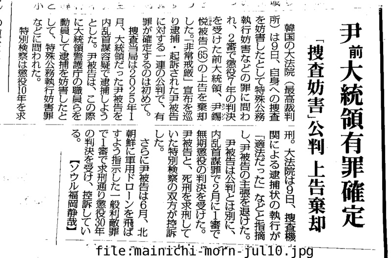
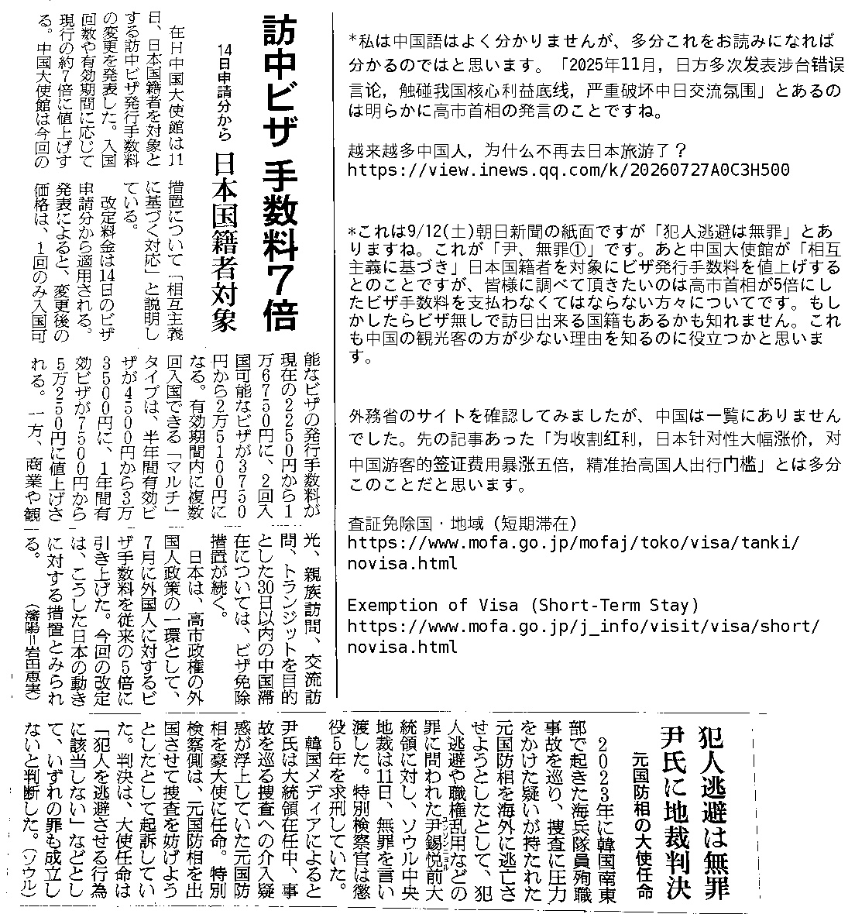
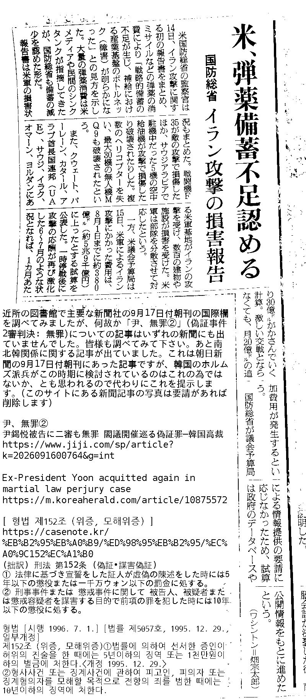
26. 9. 18
もし日本で「尹、釈放」についてのフェイクニュースが流れていたとすれば、恐らく①再拘束される前の1回目の保釈時の映像、および ②大統領官邸を去り自らのマンション(アクロビスタ)に戻る際の映像が再利用されたのではないかと思います。下記記事には写真しか掲載されていませんが、この①と②のサンプルとして提示します。
① (25. 3. 8) 검찰, 법원 구속취소 수용…윤 대통령 체포 52일만에 풀려나(종합)
https://www.yna.co.kr/view/AKR20250308042152004
② (25. 4. 11) 사과 없이 2030 포옹하고 관저 떠난 尹... "탄핵 무효" 지지자 오열도
https://www.hankookilbo.com/news/article/A2025041118320003017
ここで紛らわしいのは尹前大統領夫妻が罷免後もしばらく大統領官邸に留まっていたという事です。これはもしかすると後で何かを誤魔化す為に事前に計画して行ったことだったのではないかとも思われます。
(25. 4. 11) 윤석열씨 오늘도 관저 ‘무단점거’…“세금 쓰였으면 비용 청구해야”
https://www.hani.co.kr/arti/politics/politics_general/1191720.html
(Wifi spot에서) 下記記事の末尾に尹前大統領関連の年表がありますが、これの2026年の所を見ると「1월 2일 = 서울중앙지법, ‘일반이적 혐의’ 윤석열 추가 구속영장 발부」以降拘束令状の発付は無いように見えます。
◇ 2026년
▲ 1월 2일 = 서울중앙지법, ‘일반이적 혐의’ 윤석열 추가 구속영장 발부
▲ 1월 13일 = 내란특검, 내란 우두머리 혐의 재판서 윤석열에 사형 구형.
▲ 1월 16일 = 서울중앙지법, ‘공수처 체포방해’ 윤석열에 징역 5년 선고
▲ 2월 19일 = 서울중앙지법, ‘내란 우두머리’ 윤석열에 무기징역 선고.
▲ 2월 23일 = 서울고법, 내란전담재판부 가동. 윤석열 공수처 체포방해 2심 형사1부에 배당
▲ 3월 4일 = 서울고법, 윤석열 체포방해 2심 첫 공판. 서울고법, 윤석열 내란 우두머리 2심 형사12-1부에 배당.
▲ 4월 6일 = 내란특검, 윤석열 체포방해 2심 결심공판서 징역 10년 구형
▲ 4월 27일 = 서울고법, 윤석열 내란 우두머리 2심 첫 공판준비기일. 1심 선고 67일만.
▲ 4월 29일 = 서울고법, 윤석열 체포방해 2심서 징역 7년 선고
▲ 5월 14일 = 윤석열측, 내란 우두머리 2심 재판부 기피신청으로 재판 중단
▲ 5월 28일 = 서울중앙지법, 윤석열 ‘계엄 국무회의 위증’ 1심 무죄 선고.
▲ 6월 11일 = 서울중앙지법, 윤석열 ‘평양 무인기 의혹’ 1심 징역 30년 선고.
▲ 6월 25일 = 서울고법, 윤석열 내란 우두머리 2심 재개…특검, 사형 구형
▲ 7월 9일 = 대법원, 윤석열 체포방해 혐의 징역 7년 확정
(7. 9) 대법, ‘체포방해’ 윤석열에 징역 7년 실형 확정⋯12·3 계엄 583일 만
https://m.kwnews.co.kr/article/20260709500766
これは想像ですが「7월 9일 = 대법원, 윤석열 체포방해 혐의 징역 7년 확정」により大法院で懲役刑が確定した後、検察は新たに拘束令状を請求しなかったが拘束期間満了後も刑務所の収容状況等の問題により刑務所への移監が行われず、尹前大統領はまだ拘置所に収容されている」という仮説もありうるかと思います。
下記は先の年表にある「1월 2일 = 서울중앙지법, ‘일반이적 혐의’ 윤석열 추가 구속영장 발부」についての記事ですが、前回の拘束期間満了日が1月18日でありそれが最大6ヶ月延長されるとのことですから、もし尹前大統領が釈放され得るなら7月18日に釈放されたはずです。ただ7月9日に「7월 9일 = 대법원, 윤석열 체포방해 혐의 징역 7년 확정」がありましたので検察は追加で拘束令状を請求しなかったのではないかと思います。
법원의 구속영장 발부로 윤 전 대통령 구속기간은 최대 6개월 연장될 것으로 보인다. 형사소송법상 1심 구속기간은 최대 6개월이지만 다른 혐의로 기소돼 구속 필요성이 인정될 경우 법원 심사를 거쳐 추가로 구속영장이 발부될 수 있다. 애초 윤 전 대통령의 구속기간은 이달 1월18일 만료될 예정이었다. 앞서 윤 전 대통령은 지난해 7월 특수 공무집행방해 혐의 등으로 구속됐다.
(1. 2) [속보]윤석열 추가 구속영장 발부, ‘최대 6개월’ 연장···이달 석방 물 건너가
https://www.khan.co.kr/article/202601021818001
下記は7月9日に特殊公務執行妨害の容疑について懲役7年が確定する以前の記事ですが、「윤 전 대통령의 경우 남은 재판들이 많은 탓에 형이 확정된 이후에도 서울구치소에 계속 남을 가능성이 크다」とあるので尹前大統領の刑が確定した後も拘置所に収容され続けるであろうことは事前に分かっていたことであるようです。この文に続く説明からして尹前大統領にはまだ刑が確定していない容疑が多くあり、弁護人との接見が必要であることが刑務所に移監されない理由の一つだと想像されます。
통상 미결수 신분일 때는 구치소에 구금됐다가 형이 확정돼 기결수 신분으로 전환되면 일반 교도소에 구금된다. 2심 선고 후 대법원 재판 단계가 길어질 경우 과밀수용 문제 등을 고려해 미결수를 인근 교도소로 이감하는 경우도 있다. 안희정 전 충남지사도 2019년 수행비서 성폭행 혐의로 2심에서 징역 3년 6개월을 선고받고 법정 구속된 후 서울남부구치소에서 안양교도소로 옮겨졌다. 다만 윤 전 대통령의 경우 남은 재판들이 많은 탓에 형이 확정된 이후에도 서울구치소에 계속 남을 가능성이 크다. 윤 전 대통령은 체포 방해 혐의로 1심에서 징역 5년을 선고받고 항소한 상태다. 이날 선고가 나온 내란 우두머리 혐의 사건 외에도 평양 무인기 의혹, 위증 혐의 등 6개 재판이 남아 있다. 최종적으로 모든 형이 확정되면 접견도 제한된다. 미결수용자는 재판 준비 등이 필요한 만큼 변호인 접견을 일과 중 시간과 횟수 제한 없이 할 수 있다. 일반접견도 1일 1회 가능하다. 반면 기결수는 급수에 따라 최소 월 4회까지 접견이 제한된다. 재판이 끝난 상태인 만큼 변호인 접견도 소송이나 재심 청구사건이 있을 경우 예외적으로 가능하다.
(2. 19) '무기징역' 尹, 서울구치소 계속 머문다…복귀 첫 저녁은 잡곡밥
https://www.yna.co.kr/view/AKR20260219099400004
朝日新聞 26/2/20朝刊(近所の図書館には4月のまでしか無かったので中央図書館に来ました)
https://drive.google.com/file/d/1-tU2w6Vw6-qaKM3YIeQog-wof8IwFjS0/view?usp=drivesdk
https://drive.google.com/file/d/1ij1EZokgzXZ-Mk6lJ5RW1tkojr0DWmf3/view?usp=drivesdk
恐らく一部の方々の中で疑問に思われてきたことは「どうして尹前大統領は特殊公務執行妨害容疑で刑が確定した後も拘置所にいるのか」と「1月以降どうして拘束令状の発付(拘束期間延長)についてのニュースが出ないのか」だったのだと思います。そういったことを疑問に思われた方が「よく分からないが、前回の拘束期間満了日が18日だったから、18日に尹前大統領が釈放される可能性がある」とお思いになっていた矢先に先日の「尹、無罪①」(犯人逃避罪: 1審無罪)や一昨日の「尹、無罪②」(偽証罪: 2審無罪)があり、期待が高まった上に昨日よく分かりませんが映像弁論などというものがあったそうですから、それで「尹、釈放」の噂が一気に広まったのではないかと思います。そういった方も先の記事('무기징역' 尹, 서울구치소 계속 머문다…복귀 첫 저녁은 잡곡밥)をよくお読みになり、頭を整理してみれば理解出来るでしょうし、今後拘置所から出てくる護送車を観察したり公判の映像に出てくる尹前大統領の胸バッジ(拘置所での収容番号を印字したもの)を確認すれば謎は解けるはずです。
尹前大統領や金建希が法廷で(囚人服ではなく)スーツを着ていることに疑問を感じておられた方もおられるでしょうが、下記の記事に「공판에 바로 이어 한 시간 반 가량 보석 심문이 진행됐는데요」とあるようにこの日(25. 9. 26)保釈審問(보석 심문)が開かれたとのことですから、当時尹前大統領が拘束されていたことは確かです。ところが、その保釈審問に先立つ公判について「윤 전 대통령은 지난 7월, 재구속된 뒤 재판에 열한 차례 연속으로 불출석하고, 특검 소환에도 응하지 않았는데요. 79일 만에 모습을 드러낸 윤 전 대통령은 남색 정장 차림에, 짧은 머리가 하얗게 센 모습이었습니다」とあるように尹前大統領は正装姿でした。
(25. 9. 26) 정장에 짧은머리 尹 재판 공개…“구치소 생존 힘들다”
https://news.kbs.co.kr/news/mobile/view/view.do?ncd=8368818
同じことは金建希についても言えます。下記の映像で金建希は拘置所の職員と思われる方に拘束された状態で法廷に入場していますが、スーツ姿ですね。
https://youtube.com/shorts/1XF8TtYoU64
以前尹前大統領が出所した際に既に罷免されているにも関わらず、警護を受けていたことに疑問を感じていた方もおられるかも知れませんが、대통령 등의 경호에 관한 법률の第4条(警護対象)の1項の3に「본인의 의사에 반하지 아니하는 경우에 한정하여 퇴임 후 10년 이내의 전직 대통령과 그 배우자. 다만, 대통령이 임기 만료 전에 퇴임한 경우와 재직 중 사망한 경우의 경호 기간은 그로부터 5년으로 하고, 퇴임 후 사망한 경우의 경호 기간은 퇴임일부터 기산(起算)하여 10년을 넘지 아니하는 범위에서 사망 후 5년으로 한다」とあるので大統領とその夫人は退任後も警護されるものなのです。
제4조(경호대상)
① 경호처의 경호대상은 다음과 같다. <개정 2013. 3. 23., 2013. 8. 13., 2017. 7. 26.>
1. 대통령과 그 가족
2. 대통령 당선인과 그 가족
3. 본인의 의사에 반하지 아니하는 경우에 한정하여 퇴임 후 10년 이내의 전직 대통령과 그 배우자. 다만, 대통령이 임기 만료 전에 퇴임한 경우와 재직 중 사망한 경우의 경호 기간은 그로부터 5년으로 하고, 퇴임 후 사망한 경우의 경호 기간은 퇴임일부터 기산(起算)하여 10년을 넘지 아니하는 범위에서 사망 후 5년으로 한다.
4. 대통령권한대행과 그 배우자
5. 대한민국을 방문하는 외국의 국가 원수 또는 행정수반(行政首班)과 그 배우자
6. 그 밖에 처장이 경호가 필요하다고 인정하는 국내외 요인(要人)
대통령 등의 경호에 관한 법률
https://www.law.go.kr/법령/대통령등의경호에관한법률
下記は今日開かれた李在明大統領の記者会見のうち派兵に関する部分ですが、「전쟁에 관여 또는 개입하는 파병은 없다」、「전쟁 파병은 없다」とあり一安心かと思ったものの、少し気になる部分もあります。それは「자국의 상선과 원유 수송로 또는 국민들의 생명 안전을 보호하기 위한 최소한의 활동」ということですが、「청해 부대가 파견돼서 해적 등을 포함한 선박 수송로 국민안전 위협에 군이 대비하고 있다」、「이를 좀 강화하는 부분에 대해서 우리가 검토하고 고심하고 있다는 건 또 사실」とあるように韓国が自国への原油輸送を確保するなどの目的で行う何らかの活動を今後強化していく可能性があるということです。これの心配については今朝手紙に書きました。( https://drive.google.com/file/d/1__DMT0x6-OPQY-sZG1dXmRxxpLJtbmIJ/view?usp=drivesdk )
이재명 대통령이 18일 호르무즈 해협 파병과 관련해 "전쟁에 관여 또는 개입하는 파병은 없다"고 밝혔다. 이 대통령은 이날 청와대 영빈관에서 열린 기자회견에서 "전쟁 파병은 없다"며 "전쟁 불관여, 불개입 원칙은 지금까지도 지켜왔고 앞으로도 계속 지켜질 것"이라고 말했다. 이 대통령은 "대한민국의 경제 위기, 그리고 우리 국민들이 받는 고통 이게 너무 크다. 이 초보적인 또 낮은 단계 위험이 있다는 이유로 원유 수송을 포기해 버리면 대한민국 경제에 너무 큰 타격이 있으니 상황을 계속 파악해가면서 홍해 진입을 검토하라고 제가 지시했다"고 했다. 이 대통령은 "그건 제가 책임져야 될 일"이라며 "가능성은 낮지만 어떤 사고가 발생하면 대통령이 가지 말았어야 될 때 가라고 그래서 피해를 입었다고 하면 제가 엄청 비난을 받을 것이다. 그러나 그 비난은 제가 감수해야 된다고 생각했다"고 말했다. 이 대통령은 "최근에 예멘 반군 활동이 강화되면서 좀 어려움이 또 가중되고 있다. 그 순간순간 제가 판단해야 될 또는 결단해야 될 요소들이 많아진다"고 했다. 이 대통령은 "군 파병 문제에 대해서는 이렇게 말할 수 있다. 전쟁에 관여 또는 개입하는 파병은 없다. 이건 명백하게 말씀드릴 수 있다"고 강조했다. 이 대통령은 "전쟁의 관여 개입은 없다. 그런 형태의 파병이든 군 자산 파견이든 하지 않는다"며 "지금까지 그 원칙을 지켜왔다. 앞으로도 그 원칙은 변함이 없다"고 말했다. 이 대통령은 "다만, 우리로서는 다른 국가들이 하는 것처럼 자국의 상선과 원유 수송로 또는 국민들의 생명 안전을 보호하기 위한 최소한의 활동은 해야 된다는 점도 분명하다"며 "그게 혹여라도 경계선이 불명확해서 뒤섞일 가능성이 있기 때문에 아마 우리 국민들이 걱정하시는 것 같다"고 했다. 이 대통령은 "여러분이 아시는 것처럼 이미 청해 부대가 파견돼서 해적 등을 포함한 선박 수송로 국민안전 위협에 군이 대비하고 있다. 대응하고 있다"며 "그런데 이를 좀 강화하는 부분에 대해서 우리가 검토하고 고심하고 있다는 건 또 사실"이라고 말했다. 이 대통령은 "외국군 지휘 하에 우리 장병들을 배속시켜서 위험에 처하게 하는 거 아니냐는 걱정들이 있으신 것 같은데. 분명하게 다시 한 번 말씀드리면, 전쟁 파병은 없다"며 "전쟁 불관여 불개입 원칙은 지금까지도 지켜왔고, 앞으로도 계속 지켜질 것"이라고 강조했다.
李대통령 "파병이든 군 자산이든 전쟁 관여·개입은 없다"
https://mobile.newsis.com/view/NISX20260918_0003795441
下記にあるようにアメリカがイラン戦争を今後どのようにして行くつもりなのかはアメリカの議員らも知りえない事だそうですから、李在明大統領がご存知であるとは思えません。
Democratic and Republican lawmakers alike emerged Thursday from a closed-door briefing frustrated by what they said was a lack of clear answers from Pentagon policy chief Elbridge Colby on the Trump administration’s National Defense Strategy and the ongoing Iran war. (中略) Sen. Mark Kelly (D-Ariz.) said Iran was the main focus of the gathering, even as it had been scheduled to discuss the National Defense Strategy. But, “like a lot of the briefs we get from this administration, we walk out with more questions than we had when we went in,” he told reporters. (中略) On Thursday, Trump told Axios he had “a big decision coming up” regarding Iran. “Do I want to go in and annihilate them [the Iranian regime] or do I not? It’s a big decision. Anything could happen with me,” Trump said. The president is slated to meet with the leaders of six Persian Gulf nations on the sidelines of the United Nations General Assembly next week.
Pentagon No. 3 frustrates senators in closed-door briefing on Iran war, Trump defense strategy
https://thehill.com/policy/defense/6096862-colby-pentagon-briefing-frustrated-senators/
今日も昼食後に外出しますので外出中はホームページの更新を中止します。
大法院についても今日の記者会見で述べられるかも知れません。조(曺)희대大法院長についての記事が出ていましたので紹介します。
[노트북을 열며] 사법부를 정치 세력화한 조희대 대법원장
https://www.goodmorningcc.com/news/articleView.html?idxno=452611
もし尹前大統領のことですらここまで理解が進んでいないのであれば、恐らく李在明大統領の連任制改憲についても誤解をされておられる方がおられるのではないかと想像します。憲法70条および128条に従えば、今後も「尹アゲイン」がありえないだけでなく「李(在明)アゲイン」もありえないという事が分かるかと思います。前者について言えば李在明大統領がしようとなさっているのは「연임할 수 있다」への改憲だと思います。연임(連任)とは중임(重任)とは厳密に区別された法律用語であり、連続性がこの2つを区別しています。(参考: https://youtu.be/nQkXn7Ter3k ) 第13期大統領であった尹前大統領が連続性の無い第15期大統領として出馬する為には「중임할 수 있다」への改憲が必要ですが、李在明大統領がするかも知れない改憲はこれとは別のものです。また後者について言えば憲法128条の2項に「대통령의 임기연장 또는 중임변경을 위한 헌법개정은 그 헌법개정 제안 당시의 대통령에 대하여는 효력이 없다」とありますから、李在明大統領が「연임할 수 있다」への改憲を行なったとしても李在明大統領本人が連任することは出来ないはずです。
대한민국헌법 [시행 1988. 2. 25.] [헌법 제10호, 1987. 10. 29., 전부개정]
제70조 대통령의 임기는 5년으로 하며, 중임할 수 없다.
제128조 ②대통령의 임기연장 또는 중임변경을 위한 헌법개정은 그 헌법개정 제안 당시의 대통령에 대하여는 효력이 없다.
https://casenote.kr/법령/대한민국헌법/제70조
https://casenote.kr/법령/대한민국헌법/제128조
昨日「검찰, '김건희 명품백 미신고' 윤석열 불구속 기소」といった記事が出ていたので「尹前大統領が불구속 기소(不拘束起訴)されたのだから、尹前大統領が釈放されていない訳がない」と思われた方がおられたかも知れませんが、金建希の過去の例を見てみても下記の通り8月19日に「종합특검, '관저 이전 의혹' 김건희·윤한홍 불구속 기소」という金建希の불구속 기소についての記事が出た後の9月8日に「金建希が釈放される日が近づいている」との記事が出ています。皆様にお願いしたいのはこの「불구속 기소」という法律用語の厳密な定義を調べてみて下さいということです。
18일 법조계에 따르면 특검팀은 이날 김 여사와 윤 의원 등을 불구속 기소했다.
(8. 19) 종합특검, '관저 이전 의혹' 김건희·윤한홍 불구속 기소
https://www.news1.kr/society/court-prosecution/6262025
전원합의체에 회부된 김건희씨 구속기한은 오는 10월 31일까지입니다. 그 전에 선고가 안나오면 풀려날 수 있습니다. 조희대 대법원장은 오늘도 입장을 밝히지 않았습니다. 특검은 다른 재판에서 구속영장을 발부를 요청하는 방법도 검토중입니다.
(9. 8) ‘김건희 석방일’ 다가오는데…특검 "전합 선고 안 나오면"
https://v.daum.net/v/20260908195103561
https://news.jtbc.co.kr/article/NB12317375
下記は以前私が金建希について書いた文章ですが、尹前大統領についても「구속기간 갱신 결정」が出ればいずれかの事件の진행내용にその旨が表示されるのではと思います。
金建希の上告審(3審)については以前紹介した法院(裁判所)の事件検索機能を使って調べてみることが出来ます。下記手順の法院名を「대법원」、事件番号を「2026도6826」にそれぞれ置き換えて実行してみて下さい。実行後「진행내용」をクリックし下の方を見ていくと「2026. 8. 19 피고인 김ㅇㅇ 구속기간 갱신 결정」といった文言があるかと思いますが、以前出ていた起訴についての記事に「김건희 불구속 기소」等の見出しがついていたのは丁度この時が拘束期間更新のタイミングだったからだと思います。
https://anissatta.github.io/home-project/kim3/
法院の「나의 사건 검색」機能の使い方については以前述べた通りです。下記のページにある手順を法院名を「서울고등법원」、当事者名を「윤석열」、事件番号を下記の通りそれぞれ置き換えて実行してみて下さい。
- 内乱首謀: 2026노648
- 一般利敵: 2026노1560
https://anissatta.github.io/home-project/kim3/
ナムウィキの尹前大統領の内乱首謀容疑に対する裁判についての記事には昨日(9月17日)、尹前大統領側(윤석열 전 대통령 측)の「映像弁論」(영상 변론)が行われる予定であると書かれています。この「映像弁論」(영상 변론)が何を意味するのかは不明であるものの、仮に尹前大統領が直接公判に出席せずに行うビデオ会議のようなものだとすると昨日お祭り騒ぎが発生していた理由が分かるような気がします。韓国の尹前大統領を支持する方々は公判の日に拘置所の前に並んで尹前大統領が乗った護送車が出てくるのを待ち構えているはずです。もし昨日行われる予定だったという映像弁論がビデオ会議のようなものだったとすれば、昨日尹前大統領が乗った護送車が拘置所から出て来なかったことから「公判が中止されたのでは」とか「尹前大統領は既に釈放されているのでは」といった噂が流れたかも知れません。また事前に「9月17日の公判は中止される」とか、「9月17日に尹前大統領が釈放される」といった噂が尹前大統領の弁護人などによって撒かれていた可能性もあります。もしそうであるなら皆様にお願いしたいのは今後もしつこく拘置所前をチェックして下さいということと、法院の「나의 사건 검색」機能を使って9月17日に尹前大統領が出席したかを調べて下さいということです。以前も述べたように尹前大統領の複数の刑事事件のうち特殊公務執行妨害事件については懲役7年が大法院で確定していますから、仮に尹前大統領の拘置所での拘束期間が満了したとしても今度は刑務所に移監されるはずです。また前回拘束期間が更新された際の記事があるはずですから、それを読めば次の拘束期間満了日が分かるはずです。また「尹、釈放」が実際に起これば聯合ニュース等あらゆる報道社がそれを報じるはずです。日本の頭の悪い人々が尹前大統領の1回目の釈放時の映像を見てそれが今回の釈放の映像だと信じたかも知れません。その時と現在の尹前大統領の風貌や髪型は変わっていますので、簡単に見破ることが出来ます。
4.3.19. 17차 공판기일 (2026년 9월 17일)
윤석열 전 대통령 측의 영상 변론이 진행될 예정이다.
12.3 내란/재판/윤석열·김용현·조지호·노상원·김용군·김봉식·목현태·윤승영
https://namu.wiki/w/12.3%20내란/재판/윤석열·김용현·조지호·노상원·김용군·김봉식·목현태·윤승영
内乱首謀(내란 우두머리)罪についてご存知でない方は下記を参照なさって下さい。このように刑法第87条(내란)の第1項(우두머리)がこの内乱首謀(내란 우두머리)罪についての条文となります。このようにこの罪には死刑、無期懲役または無期禁固のみが適用されます。尹前大統領の非常戒厳は1審で「国憲を乱す(紊乱)目的で暴動を起こした」ことにあたると判断された為、無期懲役が宣告されたのだと記憶しています。
(拙訳) 刑法 第87条(内乱; 내란)
大韓民国の領土の全部または一部で国家権力を排除したり国憲を乱す(紊乱)目的で暴動を起こした者は次の各号の区分により処罰する。
第1項: 首謀者(우두머리)は死刑、無期懲役または無期禁固に処する。
형법 [시행 2021. 12. 9.] [법률 제17571호, 2020. 12. 8., 일부개정]
제87조(내란)대한민국 영토의 전부 또는 일부에서 국가권력을 배제하거나 국헌을 문란하게 할 목적으로 폭동을 일으킨 자는 다음 각 호의 구분에 따라 처벌한다.
1. 우두머리는 사형, 무기징역 또는 무기금고에 처한다.
https://casenote.kr/법령/형법/제87조
https://casenote.kr/%EB%B2%95%EB%A0%B9/%ED%98%95%EB%B2%95/%EC%A0%9C87%EC%A1%B0
下記は今日開かれる李在明大統領の記者会見についての記事です。今日は複数の分野について言及されるとのことですが、ホルムズ海峡派兵問題(호르무즈 해협 파병 문제)について述べられるかはまだ確定していないようにも読み取れます。
이재명 대통령은 18일 오전 10시 청와대 영빈관에서 기자회견을 연다. 취임 후 일곱번째인 이번 회견에는 내·외신 기자 150여명이 참석하며 정치·외교와 정책·경제 등 두 분야로 나눠 진행된다. (中略) 더불어민주당 전당대회 이후로도 여전히 파열음을 내는 여권 지지층 내 갈등 문제와 함께, '대법관 후보 재제청 요구'까지 이어진 청와대와 사법부 간 갈등 양상에 대한 언급이 나올 가능성도 있다. 이와 함께 현재 정부의 가장 큰 당면 현안인 호르무즈 해협 파병 문제와 함께 부동산 정책과 단일종목 레버리지 상장지수펀드(ETF) 등 경제 정책에 대한 입장이 나올지도 주목된다.
李대통령, 오늘 기자회견…연임개헌·공소취소·파병 입장 주목
https://www.yna.co.kr/view/AKR20260917182100001
下記の昨日出た記事に「윤 전 대통령은 12·3 비상계엄과 관련해 내란 우두머리 혐의로 기소돼 1심에서 무기징역을 선고받고 현재 항소심이 진행 중이다」とあるように尹前大統領の内乱首謀容疑に関する裁判は現在も進行中です。
(拙訳) 尹前大統領(윤 전 대통령)は12. 3非常戒厳(12·3 비상계엄)に関連して内乱首謀容疑(내란 우두머리 혐의)で起訴され1審で無期懲役(무기징역)を宣告され現在2審(항소심; 控訴審)が進行中である。
윤 전 대통령은 12·3 비상계엄과 관련해 내란 우두머리 혐의로 기소돼 1심에서 무기징역을 선고받고 현재 항소심이 진행 중이다.
(9. 17) 법원 "尹 내란 우두머리 1심 실명 판결문 공개 거부는 위법"(종합)
https://www.yna.co.kr/view/AKR20260917134851004
下記はNewsisの今日の裁判スケジュールですが、下記のように尹前大統領の一般利敵(일반이적)事件、金建希や韓鶴子らの統一教会信徒 集団入党(통일교 집단 입당)事件の公判が開かれるそうです。
오전 10시 '일반이적 등 혐의' 윤석열 전 대통령 외 3명 항소심 6차공판, 서울고법 형사1부, 311호
오전 10시10분 ‘통일교 집단 입당 혐의’ 김건희·한학자·윤영호·정원주 5차공판, 서울중앙지법 형사27부, 509호
[오늘의 주요일정]법조(9월18일 금요일)
https://mobile.newsis.com/view/NISX20260917_0003794446
🧑🍳 오늘의 부엌 영상:
https://drive.google.com/file/d/1SAqQjsMNPlBuoFxxSo0nhJLd3Zecsote/view?usp=drivesdk
https://drive.google.com/file/d/1HJCGHq2lqXDZ91zlVVj1sX4Gbv1i7wcC/view?usp=drivesdk
米、イラン高官の国連総会出席認める パレスチナ議長には再びビザ発給拒否
https://www.reuters.com/jp/world/us/SGOAC5M7WJIGDKVIVUJ6E62TTE-2026-09-17/
이란 대통령, 유엔총회 참석차 美방문할듯…국무부 "비자 승인"(종합)
https://www.yna.co.kr/view/AKR20260918003551071
US to allow Iran delegation to attend UN meetings in New York as war passes half-year mark
https://www.bbc.com/news/articles/c6n8m72r13ngo
어젯밥에 말한 건 다음 기사와 관련될지도 모릅니다. 저는 잘은 모르겠지만 호르무즈 파병에 대해 불길한 느낌이 듭니다. 오늘도 오전 9시경에 마르야스에 갑니다.
US opts not to back Saudi Arabia in Yemen after meeting Houthi leaders
26. 9. 17
아마 내일 열리는 이재명 대통령 기자 회견을 보면 정부가 어느 정도 호르무즈 파병에 대해 준비하고 있는지 그리고 미국의 요청이라는 것이 구체적으로 어떤 일였는지를 알 수 있을 것인데요. 그런데 친 이란 세력이 새 방식으로 기름값을 높이고 있다는데도 미국은 사우디 아라비아를 지원하지 않다니 저는 지금 무슨 일이 일어나고 있는지 잘 모릅니다. 오늘은 좀 낮잠을 잔 후 저녁 식사를 하기로 합니다.
9. 17 교토 방문
https://drive.google.com/file/d/1wRO9ljRuaMdvXVmgVjd0YaEtNCLizDaS/view?usp=drivesdk
「정 장관은 한국시간으로 18일 밤에 열릴 것으로 예상되는 조현 외교부 장관과 마코 루비오 미국 국무장관의 회담 전에 NSC 상임위가 열릴 계획이 있느냐는 질문에도 "없다"라고 말했다」とあるので今週NSCが開かれることはないようです。
정동영 통일부 장관은 17일 청와대에서 개최될 예정이었던 국가안전보장회의(NSC) 상임위원회가 열리지 않았다고 밝혔다. NSC 상임위원인 정 장관은 이날 국회 외교통일위원회 전체회의에서 안철수 국민의힘 의원이 이날 오전 NSC 상임위가 열렸는지를 묻자 "열리지 않았다"라고 답했다. 정 장관은 한국시간으로 18일 밤에 열릴 것으로 예상되는 조현 외교부 장관과 마코 루비오 미국 국무장관의 회담 전에 NSC 상임위가 열릴 계획이 있느냐는 질문에도 "없다"라고 말했다. 앞서 이날 청와대와 정부가 NSC 상임위원회에서 호르무즈 해협 파병 문제를 논의할지 여부를 두고 상반된 관측이 제기된 바 있다. 그러나 이날 오전 회의 자체가 열리지 않은 데다, 한미 외교장관회담 전 개최 계획도 없는 것으로 확인되면서, 청와대와 정부는 한미 고위급 협의를 더 지켜본 뒤 호르무즈 해협 파병을 포함한 '기여' 문제에 대한 판단을 내린다는 방침으로 보인다. 한편 이재명 대통령은 18일 오전 10시 기자회견을 열고 호르무즈 사안을 포함한 외교·안보 현안에 대한 생각을 밝힐 예정이다. 이 자리에서 호르무즈 해협 파병과 관련해 이 대통령이 직접 진전된 구상을 밝힐 가능성이 있다는 관측도 나온다.
정동영 "오늘 NSC 안 열려…한미 외교장관회담 전 개최 안 해"
https://m.news.nate.com/view/20260917n17162
https://www.news1.kr/diplomacy/defense-diplomacy/6293791
지금 '이란 전쟁은 일간에 끝날 것'이라는 소문이 퍼지고 있을 수도 있네요. 미국과 이란 사이 입장이 모순되는 건 전부터 많이 있었지만 중간 선거 때문에 더 많게 될 것입니다.
Iran official: No talks with US until conditions met
https://www3.nhk.or.jp/nhkworld/news/20260916de50492/
手紙に書いたように今日は外出しますが、外出中はいつものように下記のファイルを使って状況をお伝えします。
https://drive.google.com/file/d/1x30P2qT6XxLC33Q0764Hg0zCdo4Q21-z/view
昨日下記のような記事が出ていたので何か噂が流れたのかも知れませんが、조(曺)희대大法院長が発言されたのは確かですがこれは政府(青瓦台)側から求められている「立場の発表」とは異なるものです。「立場の発表」とは「大法院の裁判官(대법관)の欠員をいつどのようにして埋めるのか」についての立場の発表です。これは金建希の大法院判決を下す上で必要なものとなります。下記記事によると昨日조(曺)희대大法院長が世宗法律文化賞 授賞式 記念行事(세종법률문화상 시상식 기념사)にて「법과 제도는 단순히 통치의 수단이 아니라 백성의 삶을 돌보고 보호하는 데 쓰여야 한다」と述べたそうですが、これが李在明大統領への嫌味だったのかは分かりません。今後誤解を防ぐために「立場の発表」の代わりに「金建希の最高裁判決を下すのに必要な手続に関する立場の発表」という言葉を使います。
조희대 대법원장이 16일 "법과 제도는 단순히 통치의 수단이 아니라 백성의 삶을 돌보고 보호하는 데 쓰여야 한다"고 말했다. 조 대법원장은 이날 오전 서울 용산구 그랜드하얏트 서울에서 열린 제1회 세종법률문화상 시상식 기념사를 통해 세종대왕의 법사상을 이같이 소개했다.
조희대 "법은 단순 통치 수단 아냐…백성 삶 보호에 쓰여야"(종합)
https://www.yna.co.kr/view/AKR20260916096651004
私が韓国のホルムズ派兵に反対の立場をとっている為に迫害を受けたのかも知れませんが、韓国では反対派の方が多い状態なのです。日本で同様のことがあれば賛成多数となるのかも知れませんが、韓国はイランと敵対関係にある訳ではありませんから(日本もイランと外交関係があります)戦争に参加する理由も無いのです。
１０日発表の韓国の世論調査「全国指標調査」で、ホルムズ海峡への軍派遣に反対する人が４５％に上り、賛成の３６％を上回った。革新系与党「共に民主党」内でも反対論が広がっており、韓国政府は慎重姿勢を強めているもようだ。 全国指標調査によると、与党支持層では賛成３１％、反対５５％で、差がさらに拡大した。 軍を派遣する場合は国会の同意が必要になるが、先の与党代表選に出馬した宋永吉議員は９日、「国連決議もなく、北大西洋条約機構（ＮＡＴＯ）加盟国も日本も（派遣を）控えている状況だ。イラク戦争より大義名分がない」と指摘。軍出身で米韓連合軍司令部副司令官を務めた与党の金炳周議員も「米国とイスラエルによる侵略戦争であり、われわれが巻き込まれてはならない」と表明した。
ホルムズ海峡への軍派遣に世論反対多数 韓国政府、慎重姿勢に修正か
https://www.jiji.com/sp/article?k=2026091000684&g=int
高市首相もイラン側と電話で会談したりされています。
https://www.kantei.go.jp/jp/105/actions/202608/12tel_kaidan.html
昨日父が郵便ポストに入れたものと思われるメモは読まずに例の排水溝に入れておきました。(私は団地の方々が私の郵便ポストを覗いたり、ダイアルロックの数字を操作することでメッセージを残されていると確信しています) あとイラン戦争のことをよく理解していない方々が私が豚肉を買わないのは敵国であるイランを応援しているからだとお思いになり、私を迫害されていた可能性もあるのでやはり豚肉も買うことにしました。私は韓国の方々と同様、イラン・アメリカ・イスラエルいずれの側にも与しないという立場にいます。
もしかすると昨日の「尹、無罪②」の容疑である偽証罪というのがどういう罪なのかご存知でない方もおられるかも知れませんので、下記に刑法の該当の条文を記します。
(拙訳) 刑法 第152条 (偽証•謀害偽証)
① 法律に基づき宣誓をした証人が虚偽の陳述をした時には5年以下の懲役または一千万ウォン以下の罰金に処する。
② 刑事事件または 懲戒事件に関して 被告人、被疑者または懲戒容疑者を謀害する目的で前項の罪を犯した時には10年以下の懲役に処する。
형법
[시행 1996. 7. 1.] [법률 제5057호, 1995. 12. 29., 일부개정]
제152조 (위증, 모해위증)①법률에 의하여 선서한 증인이 허위의 진술을 한 때에는 5년이하의 징역 또는 1천만원이하의 벌금에 처한다.<개정 1995. 12. 29.>
②형사사건 또는 징계사건에 관하여 피고인, 피의자 또는 징계혐의자를 모해할 목적으로 전항의 죄를 범한 때에는 10년이하의 징역에 처한다.
형법 제152조 (위증, 모해위증)
https://casenote.kr/법령/형법/제152조
https://casenote.kr/%EB%B2%95%EB%A0%B9/%ED%98%95%EB%B2%95/%EC%A0%9C152%EC%A1%B0
これについてもご存知でない方がおられるかも知れませんので記事を示します。
苦悩深まる「ホルムズ派兵」問題 韓米外相会談で議論か（聯合ニュース）
https://news.yahoo.co.jp/articles/09fb1e47313dfb0fea5847660eefb7e20d2fcbd9
🧑🍳 오늘의 부엌 영상:
https://drive.google.com/file/d/1DcIh46mrHG_COy7g03viOqJOvAobSqTt/view?usp=drivesdk
https://drive.google.com/file/d/1ZeflRE9IzGoRJDsP7e99qT2M13PvW1Dg/view?usp=drivesdk
米下院がトランプ氏にイラン戦争の終結を要求、共和党議員7人も決議を支持
https://mezha.net/jp/news/298fefff_us_house_passes/
美하원, '이란전쟁 중단 결의' 세번째 가결…공화 7명 가세
https://www.yna.co.kr/view/AKR20260916131700009
7 House Republicans vote with Democrats on Iran war powers resolution
https://www.foxnews.com/live-news/iran-war-powers-vote-trump-strait-hormuz-saudi-strikes-09-16-26
下記はNewsisの裁判スケジュールですが、ここにある通り尹前大統領(윤석열 전 대통령)ほか7名の内乱首謀 等の容疑(내란 우두머리 등 혐의)の2審(항소심)公判がソウル高裁(서울고법)で開かれます。
오전 10시 '12·3 비상계엄' 내란 우두머리 등 혐의 윤석열 전 대통령 외 7명 항소심 17차공판, 서울고법 형사12-1부, 417호
[오늘의 주요일정]법조(9월17일 목요일)
https://mobile.newsis.com/view/NISX20260916_0003792666
またこの事件が1審でも無罪判決が出ていることに注目してみて下さい。偽証というのは裁判で嘘をつくことですが、今回の件について言えば閣議を開く意図があったかどうかについての発言ですから、「ちょっと嘘をついた」とか「部分的に虚偽だと認められる」とはならず、必ずイエスかノーにしかならないはずです。ですから今回の2審判決は1審判決と何も変わらないはずです。
以前「尹、無罪①」(9月11日)が出た直後に韓国人と思われる若い方々をこの市で見かけることがありましたが(当時私はこの方々が「トランプ大統領がホルムズ派兵を要求したりして韓国をいじめているように見えるのは宮島のせいだ」という噂を信じて私の様子を見に来られたのだと思っていました)、やはり韓国でもこういったことを理解していない方々がおられるのだと思います。「尹、無罪①」については犯人逃避罪という、いかにも内乱とは関係なさそうな容疑でしたので消火は簡単だったのかも知れませんが、今回の「尹、無罪②」は偽証という何か重大な悪事と関係がありそうな感じのする容疑であり、なおかつそれが別の内乱に関する裁判でなされた罪である為に誤解を解くには時間がかかるだろうと思います。まず偽証というものが法廷で行われる罪であるということに注目してみて下さい。例えば皆様の友達が殺人容疑で起訴されて、その裁判に皆様が証人として出席したとします。皆様はその友達が有罪であることを知りながら「彼は何もしていない」と証言したので偽証罪で起訴されることになりました。新聞記者が皆様の裁判について「殺人偽証」という題の記事を書いたとしても、皆様が殺人に関与したことにはなりません。皆様の罪はあくまでも口で行った罪です。これが偽証のより簡単な例です。今回の「尹、無罪②」をややこしくしているのは法廷で行われた証言自体が別の問題についての証言者の意思の有無を表すものになっており、それが内乱の事務的な手続きに関係しているということだと思います。
昨日の「尹、無罪②」が理解出来なかった方がおられるのかも知れませんのでもう一度説明してみます。もし今回の判決に問題があるとすれば下記の『尹被告の弁護団は判決後、「非常戒厳の要件である閣議が尹大統領の計画に沿って正当に行われたことを確認した点で大きな意味がある。今後の内乱罪の裁判へ重要な道しるべとなることを期待する」と表明した』の部分ですが、金建希のドイツモータース株価操作容疑と同様に今回の偽証容疑も後で有罪に転じる可能性はあると思います。またこれは尹前大統領が宣布した非常戒厳が合法的であったことを意味するものではありません。閣議というのは法が要請する手続の一つであり、戒厳宣布が合法的である為の唯一の条件ではありません。(というより閣議自体は開かれているのですから、この弁護人が要点をずらす為にこのようなことを述べている可能性もあります) 非常戒厳を合法的に宣布するには戦争等の事態が発生している必要があります。尹前大統領は戒厳宣布の名目を作る為に北朝鮮に無人機を送り込ませた容疑でも起訴されていますが(一般利敵)、結局何も起きませんでしたので完全に平時であるソウルで深夜突然、非常戒厳を宣布することになりました。昨日内乱首謀罪を殺人罪に喩えましたが、ここに書かれていることは「殺人を行う前にちゃんとゴミの分別はしたのか? 手は洗ったのか?」といった程度の話ではないかと思います。手を洗ってから人を殺せば無罪になるということはありませんし、尹前大統領が一応手を洗ったことは以前公開された映像などから確かな事だと思います。くどいようですが、昨日下された(無罪)判決は下記引用にある通り「韓悳洙元首相の裁判で偽証した罪」についてであって、昨日閣議が開かれたのかどうかとか、尹前大統領の意思で閣議が開かれたのかどうかが裁判の議題になっていたのではありません。それらが議題になっていたのは韓悳洙の裁判です。先の喩えで説明するなら、昨日の判決は「殺人を行う前に手を洗ったか」についての別の犯罪者仲間の裁判にて「私はちゃんと手を洗うつもりでした」と虚偽の主張をした容疑に対するものです。
韓国のソウル高裁は１６日、韓悳洙元首相の裁判で偽証した罪に問われた前大統領の尹錫悦被告に対し、一審に続き無罪を言い渡した。 特別検察官は、２０２４年１２月の「非常戒厳」宣言の際、尹被告が当初は閣議を開くつもりがなかったが、韓氏の建議を受けて招集したと判断。昨年１１月、内乱行為に加担した罪などに問われた韓氏の裁判で、尹被告が「建議の前から閣議を開く計画だった」と述べたのは虚偽だとして起訴していた。 韓国メディアによると、高裁は「被告が非常戒厳宣言に閣議の審議が必要と知らなかったとみるのは難しく、むしろ、最小限の要件を満たそうとしたと思われる」と指摘。偽証と断定できないと結論付けた。 尹被告の弁護団は判決後、「非常戒厳の要件である閣議が尹大統領の計画に沿って正当に行われたことを確認した点で大きな意味がある。今後の内乱罪の裁判へ重要な道しるべとなることを期待する」と表明した。
尹錫悦被告に二審も無罪 閣議開催巡る偽証罪―韓国高裁
https://www.jiji.com/sp/article?k=2026091600764&g=int
Ex-President Yoon acquitted again in martial law perjury case
https://m.koreaherald.com/article/10875572
어젯밤에 아버지가 왔으니 아마 누군가가 저를 관리하거나 뭔가를 주고 있다는 소문을 미리 냈을 것이라고 해서 웹사이트를 갱신했습니다. 그 부분은 삭제하겠습니다. 오늘도 오전 9시경에 마르야스에 가요.
26. 9. 16
오후 6시경에 아버지가 이번에는 저의 방 초인종을 눌렀습니다. 그는 인터폰을 통해 '나야' 했으니 저는 무시하기로 했습니다. 그는 다시 초인종을 눌렀지만 아마 이 단지 내에 있을 것이니 만약 당신이 아시는 분이 여기에 있으면 그를 감시해 주시길 바라겠습니다.
만약 일본에 있어서 관광업에 종사하시는 분들이 국회 앞서 '중국 관광객이 사증 없이 입국할 수 있게 하라'고 요청했다고 해도 정부가 아무 일도 하지 않을 가능성이 높습니다. 하지만 한국에서 시민들이 '호르무즈 파병을 중지하라'고 요청하면 나라가 지켜질 수도 있을 것인데요. 저는 이런 이유로 일본보다 대한민국이 살기에 좋은 나라이라고 생각합니다. 이 세계에는 캐나다 같은 국가도 있으니까 아마 다른 선택지도 있을 것입니다.
(Wifi spot에서) 私は中国語はよく分かりませんが、多分これをお読みになれば分かるのではと思います。「2025年11月，日方多次发表涉台错误言论，触碰我国核心利益底线，严重破坏中日交流氛围」とあるのは明らかに高市首相の発言のことですね。
越来越多中国人，为什么不再去日本旅游了？
https://view.inews.qq.com/k/20260727A0C3H500
全文を引用しますので、これを中国語ができる方に見せてください。皆様が高市首相の発言について理解するには皆様自身が少し努力せねばなりません。(皆様は何も努力しなくても他国の方々が何を考えているか自動的に理解できるようになると思っているのかも知れませんが)
曾几何时，日本是国人出境游的首选目的地。干净的街道、贴心的服务、特色美食与精致文创，让赴日旅游常年火爆，中国游客更是撑起日本入境游的半壁江山。 但近两年风向彻底逆转，赴日游客数据连续多月断崖式下跌，同比暴跌超五成，大量航线取消、免税店冷清萧条。 很多人以为只是情绪使然，其实国人放弃赴日游，早已从感性偏好，变成了清醒务实的综合选择。 下面，老谭，为你解读！
一、政治底线被触碰，出行安全亮起红灯
旅游的前提，永远是安全与舒心。 2025年11月，日方多次发表涉台错误言论，触碰我国核心利益底线，严重破坏中日交流氛围。基于安全考量，官方随即发布提醒，建议中国公民谨慎前往日本。 这并非刻意限制往来，而是对国民人身安全、出行权益的严谨守护。 官方预警叠加民间情感共鸣，直接改写了国人的出行决策。旅游本是休闲放松，没人愿意顶着舆论风险、安全隐患出游。 政治氛围的降温，成为赴日旅游热度骤降的核心导火索，也是多数人主动放弃行程的首要原因。
二、单方面抬高门槛，亲手劝退中国游客
比起氛围降温，日本单方面的利己操作，彻底斩断了大众的出行意愿。 为收割红利，日本针对性大幅涨价，对中国游客的签证费用暴涨五倍，精准抬高国人出行门槛。 不仅如此，多地景区、商户推行区别对待的双轨票价，中外游客待遇不一，满满的区别对待，让游客倍感寒心。 出行成本翻倍、体验感大打折扣，性价比彻底崩盘。 与此同时，中日直飞航班大幅缩减，恢复率不足疫情前六成，大量热门航线直接取消，机票涨价、转机繁琐。 花钱更多、折腾更久、待遇更差，没人愿意为这份“区别对待”买单。
三、国内旅游崛起，平替全面超越境外小众游
放在十年前，国人偏爱出境游，是因为国内文旅配套不完善、玩法单一。 但如今国内旅游早已迭代升级，从自然风光到人文体验，高品质目的地遍地开花。 想看干净治愈的海景，海南、胶东半岛不输日韩；想体验精致城市风光，苏州、杭州、青岛、成都氛围感拉满；想感受小众特色，西北环线、川西秘境、沿海小城各有风情。 不用办签证、不用倒时差、语言无障碍、饮食更贴合口味，短途长途随心选。 过去日本旅游主打的“干净、精致、治愈”，如今国内景区全部可以平替，甚至体验更好。 既然家门口就有顶级风景与服务，何必远赴他乡受限制、遭区别对待。
四、消费回归理性，旅游不再盲目跟风
国人旅游观念早已彻底转变，告别早年“出国就是高端”的盲目认知。 从前大家出境游，多是跟风打卡、追求噱头；如今年轻人、家庭出游，更看重性价比、舒适度、体验感。 面对日方涨价、区别对待、航线缩减的多重负面影响，大众不再盲目追捧网红目的地。旅游的本质是取悦自己，而非迁就他人。 没必要为了所谓的境外滤镜，付出更高成本、承受较差体验。这种清醒的消费观，让赴日游彻底褪去热度，回归正常市场逻辑。 老谭想说：国人不再热衷赴日旅游，从来不是极端排斥，而是一场清醒的市场回归。 政治氛围降温、出行门槛抬高、国内文旅崛起、消费心态成熟，多重因素叠加，造就了如今的旅游新格局。 风景没有高低之分，旅行的初心始终是舒心自在。与其远赴他乡看人脸色、花高价凑滤镜热闹，不如深耕祖国山河，在故土风光里，收获最安心、最治愈的旅行体验。 对此，你怎么看？欢迎留言讨论！ 我是谭天道地，欢迎关注我。
下記は「尹、無罪②」ですが、「求刑は罰金1000万ウォン（約110万円）だった」とあるので大した事件ではなかったのかも知れません。
韓国のソウル高裁は16日、「非常戒厳」宣言を巡り偽証罪に問われた尹錫悦（ユン・ソクヨル）前大統領の控訴審で、一審に続き無罪を言い渡した。求刑は罰金1000万ウォン（約110万円）だった。
尹前大統領の非常戒厳巡る偽証罪 二審も無罪「虚偽の証言と断定できない」
https://jp.yna.co.kr/view/AJP20260916002200882
ホルムズ派兵についてやはり今週中に決断するようなことはないようです。
다음 절차는 NSC 논의이지만, 오는 17일 열리는 NSC 상임위원회에서는 최종 결론에 이르지 않을 가능성이 크다. 당초 정부는 17일 NSC 상임위에서 호르무즈 파병 문제를 논의하되 결론은 내리지는 않을 방침이었던 것으로 전해졌다. 그러나 국내 여론 추이와 곧 있을 한미 외교장관 회담 일정 등을 고려해 이번 NSC에선 호르무즈 파병을 안건으로 상정하지 않기로 방침을 변경한 것으로 알려졌다. 조현 외교부 장관은 17일 오전 미국행 비행기에 올라 마코 루비오 미 국무부 장관과 18일 한미 외교장관 회담을 가질 예정이기에 NSC 참석이 어려운 상황이다. 외교부 장관 없이 파병이라는 중대 외교·안보 현안을 논의하기는 쉽지 않다. 또한 이런 논의는 NSC를 비롯한 고위급에서 다뤄지더라도 종국에는 군 통수권자의 결단이 필요한 대목이다. 이에 오는 18일 오전 예정된 이재명 대통령 기자회견에서 이 대통령이 직접 마이크를 잡고 파병에 대한 의견을 밝히는 게 먼저일 것으로 보인다. 이후 이를 토대로 조 장관이 루비오 장관과의 한국시간으로 18일 오후로 예상되는 회담에서 한국의 입장을 전달하고 미측 의견을 들은 뒤 다시 정부 내 논의가 이어지는 식의 전개가 예상된다.
정부, 호르무즈 파병 논의 속도조절…美 압박에도 신중기류(종합)
https://www.yna.co.kr/view/AKR20260915150851504
下記は9/12(月)朝日新聞の紙面ですが(ネパール洪水の部分はあとで削除します)「犯人逃避は無罪」とありますね。これが「尹、無罪①」です。あと中国大使館が「相互主義に基づき」日本国籍者を対象にビザ発行手数料を値上げするとのことですが、皆様に調べて頂きたいのは高市首相が5倍にしたビザ手数料を支払わなくてはならない方々についてです。もしかしたらビザ無しで訪日出来る国籍もあるかも知れません。これも中国の観光客の方が少ない理由を知るのに役立つかと思います。
https://drive.google.com/file/d/1Ix71M2ye-IDXr-sflmGO_Rl4XlXBe2VA/view?usp=drivesdk
(Wifi spot에서) 外務省のサイトを確認してみましたが、中国は一覧にありませんでした。先の記事あった「为收割红利，日本针对性大幅涨价，对中国游客的签证费用暴涨五倍，精准抬高国人出行门槛」とは多分このことだと思います。
査証免除国・地域（短期滞在）
https://www.mofa.go.jp/mofaj/toko/visa/tanki/novisa.html
Exemption of Visa (Short-Term Stay)
https://www.mofa.go.jp/j_info/visit/visa/short/novisa.html
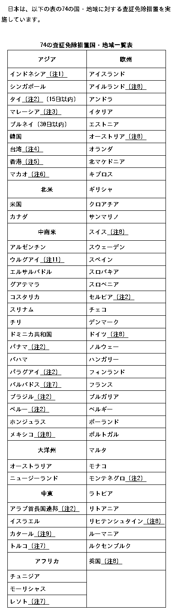
やはり今日の偽証容疑の2審判決も無罪だったようです。これが昨日表に書いた「尹、無罪②」となります。本文に「ハン・ドクス前国務総理の内乱裁判で偽証した容疑」(한덕수 전 국무총리의 내란 재판에서 위증한 혐의)とあるようにこれは他の裁判で偽証した容疑についての裁判です。記事名に「계엄 국무회의 위증」とありますが、ここにある「계엄 국무회의」はハン・ドクスの裁判にて問題となっていたものです。つまり「계엄 국무회의」についての裁判にて偽証をした容疑について尹前大統領が今日、1審と同様無罪を宣告されたということです。どうしてこのような紛らわしい記事名をつけたのか分からないでもありませんが、これ以上追及しないことにします。あと明日のNSCについて中央日報と同様の報道をしている例は今のところ見つかりません。
한덕수 전 국무총리의 내란 재판에서 위증한 혐의로 기소된 윤석열 전 대통령이 2심에서도 무죄를 선고받았다. 서울고법 형사1부(윤성식 부장판사)는 16일 위증 혐의로 재판에 넘겨진 윤 전 대통령에게 1심과 같이 무죄를 선고했다.
[2보] '계엄 국무회의 위증' 尹 2심도 무죄…"허위진술 단정 못해"
https://www.yna.co.kr/view/AKR20260916079700004
今朝私に危害を加えようとした方々を見て思ったのはもしかすると私が昨日書いた文章をお読みになり「中日政府間の関係が悪化したことが高市首相の発言によるものだということは何となく理解できた。だがそれは中国人観光客が少ないことの説明にならないじゃないか。やはり宮島が悪の根源だ」と思われた方がおられたのではないかという事です。中国政府が自国民に対して日本への渡航を控えるよう要請したり航空便を削減したこと等すらご存知でない方もおられるのかも知れません。私も昼食後Wifiスポット(ゼッテリア)に行って調べてみますが、今思いついた対策がありますので下記を試してみて下さい。Googleに「外交青書」と入力して日本の外務省がPDFファイルとして配布している外交青書の2026年度版をお読みになり、中国についてどのように記述されているか、前年度とどこが変わっているか等を調べてみて頂きたいのです。下記はかなり古い記事ですが、この件についての吉村知事の見解が述べられています。大阪で観光業を営んでおられる方は一度お読みになってみて下さい。(私は吉村知事があまり好きではありません)
https://www.fnn.jp/articles/-/962666?display=full
尹前大統領の裁判が複数に分かれていることについてよく理解されていない方が何か噂を流している可能性もありますが、まずこれらの複数の裁判はいずれも起訴された時期が異なりますし、対象とする犯罪がなされた時期も異なるのです。皆様が分かりやすいように内乱首謀罪を殺人罪に喩えると、尹前大統領はまず殺人を行う名目を作るために近所の家に石を投げ(一般利敵)、隣人が特に反応を示さなかったにも関わらず殺人(内乱首謀)を実行しました。その後殺人容疑で自らを逮捕しようとした警察官をボディガードを使って追い払うなどしました。(特殊公務執行妨害)その後結局逮捕されたものの、証人として出席した他の犯罪者仲間の裁判にて虚偽の証言を行いました。(偽証) 今日2審判決が下されるのはこの「証人として出席した他の犯罪者仲間の裁判にて虚偽の証言を行った」という部分についてです。これについて無罪判決が出たとしても殺人等の他の裁判には影響しないのです。
恐らく日本の皆様は今日下されるという判決について早く知りたいと思っておられると思います。下記に検索用のURLを示しますが、公判が10時半に始まるからといってその時刻に直ちに判決が下る訳がないということは誰でも分かるかと思います。
https://news.nate.com/search?q=윤석열
https://news.nate.com/search?q=%EC%9C%A4%EC%84%9D%EC%97%B4
昨日조(曺)희대大法院長について述べるのを忘れていたので下記記事を引用します。これによると韓国与党の「共に民主党」が조(曺)희대大法院長に関して「李在明大統領が大法官候補の再指定を要請してから15日(보름)が過ぎたが、조(曺)大法院長は依然として黙々不答で揺るぎない」(이재명 대통령이 대법관 후보 재제청을 요청한 지 보름이 넘었지만, 조 대법원장은 여전히 묵묵부답, 요지부동)と述べたとのことですが、「大法官の空白(欠員)をいつ、どのようにして終わらせるのか具体的な立場と日程を速やかに明らかにせねばならない」(대법관 공백을 언제 어떻게 끝낼 것인지 구체적인 입장과 일정을 신속하게 밝혀야 한다)とのことですので조(曺)희대大法院長が「立場の発表」をしていないのは確かだと思われます。
더불어민주당은 조희대 대법원장을 향해 기존 대법관 후보 추천위원회가 추천한 후보 가운데 한 명을 재제청해야 한다고 거듭 촉구했습니다. 한병도 원내대표는 오늘(15일) 원내대책회의에서 이재명 대통령이 대법관 후보 재제청을 요청한 지 보름이 넘었지만, 조 대법원장은 여전히 묵묵부답, 요지부동이라며 이같이 말했습니다. 그러면서 조 대법원장은 추상적인 사법부 독립을 되풀이할 것이 아니고, 대법관 공백을 언제 어떻게 끝낼 것인지 구체적인 입장과 일정을 신속하게 밝혀야 한다고 언급했습니다. 이어 이미 적법한 절차를 거쳐 추천된 후보들이 있고, 이 가운데 다시 후보를 추천해 대법관 공백을 끝낼 수 있다고 덧붙였습니다. 김한규 원내정책수석부대표도 공정하고 신속한 재판에 대한 국민 요구가 크고 대법원의 정치개입에 대한 우려도 크다며, 조 대법원장은 숙고라는 명목으로 시간 끄는 것을 멈추고 조속히 후보자를 재제청하라고 촉구했습니다.
민주 "조희대, 대법관 공백 언제 끝낼지 신속히 밝혀야"
https://m.ytn.co.kr/news_view.php?key=202609151057010114
https://v.daum.net/v/8fea7CEovS
日本語で検索すると下記のような記事が出てきますが、先の韓国語の記事とどちらが正しい情報なのかよく分かりません。
あすの国家安全保障会議の議題から「派兵」外す…青瓦台、支持率下落で「速度調節」
https://japanese.joins.com/JArticle/355107
https://news.yahoo.co.jp/articles/c08b6b59b056dfda224ee38bcd47345c65aad2e5
先の日本語の記事は中央日報の単独取材によるものらしいです。
[단독] 내일 NSC 안건서 ‘파병’ 뺐다…靑, 지지율 하락에 ‘속도 조절’
https://www.joongang.co.kr/article/25462220
BGMが変更されていました:
https://drive.google.com/file/d/11wIF5RyKim9XbXJoNVvqgk0aNlspH_nM/view?usp=drivesdk
またBGMが変更されたら報告します。(いつもと違う時刻に突然訪問するかも知れません)
https://drive.google.com/file/d/1QDfTcg01qLiDRWzUQFunLvWW1bZnngCo/view?usp=drivesdk
今週予定されている韓国のホルムズ派兵関連の日程のうち下記は現時点で明らかになっているものについてです。
(16日-: KIDD) 한미 통합국방협의체 'KIDD' 부산서 개최…전작권 전환·함정 MRO 논의
https://www.news1.kr/diplomacy/defense-diplomacy/6291414
(17日: NSC) 내일 NSC서 호르무즈 파병 논의할 듯…美압박 속 신중론도 여전
https://www.yna.co.kr/view/AKR20260915150800504
(18日: 李在明大統領 記者会見) 이 대통령, 18일 기자회견…"현안 분명 메시지"
https://www.yna.co.kr/view/MYH20260915015500038
下記は内容を確認出来ていませんが、韓日両国の市民達がホルムズ派兵に反対しているようです。
한일 종교·시민사회 "이재명·다카이치 정권은 호르무즈 파병 검토 즉각 중단하라"
https://www.tongilnews.com/news/articleView.html?idxno=217467
下記記事には今日開かれる尹前大統領の2つの公判(偽証容疑の宣告公判と、新しい裁判の初回公判準備期日)について述べられています。下記はそのうち新しい裁判の初回公判準備期日についてのくだりですが、ここにあるように被告人の出席義務はありません。(공판준비기일은 정식 공판에 앞서 피고인과 검찰 양측의 입장을 확인하고 향후 심리 계획 등을 정리하는 절차로, 피고인의 출석 의무가 없다)
서울중앙지법 형사합의38-1부(장성진·정수영·최영각)는 16일 오후 윤 전 대통령의 직권남용 권리행사 방해 혐의, 신 전 실장의 내란중요임무종사 및 직권남용 권리행사 방해 혐의 1심 첫 공판준비기일을 진행한다. 공판준비기일은 정식 공판에 앞서 피고인과 검찰 양측의 입장을 확인하고 향후 심리 계획 등을 정리하는 절차로, 피고인의 출석 의무가 없다.
이번주 尹 '한덕수 재판 위증' 2심 선고…'계엄 정당 메시지 전파' 첫 재판
https://mobile.newsis.com/view/NISX20260911_0003786454
下記はNewsisの裁判スケジュールですが、ここにも「午前10時30分」(오전 10시30분)、「ハン・ドクス前総理(の)裁判(での)偽証容疑」(한덕수 전 총리 재판 위증 혐의)、「尹前大統領」(윤석열 전 대통령)、「控訴審 宣告期日」(항소심 선고기일)、「ソウル高裁(고법は高等法院の略です)刑事1部・311号」(서울고법 형사1부, 311호)とありますね。その次に示した午後2時のは今日始まる尹前大統領の新しい裁判の初回の公判準備期日です。公判準備期日には被告人の出席義務がありません。
오전 10시30분 ‘한덕수 전 총리 재판 위증 혐의’ 윤석열 전 대통령 항소심 선고기일, 서울고법 형사1부, 311호
(中略)
오후 2시 '계엄 정당 메시지 전파 혐의' 윤석열 전 대통령·신원식 전 국가안보실장 1차 공판준비기일, 서울중앙지법 형사38-1부, 514호
[오늘의 주요일정]법조(9월16일 수요일)
https://mobile.newsis.com/view/NISX20260915_0003790765
🧑🍳 오늘의 부엌 영상:
https://drive.google.com/file/d/1gHkLJLaqF8CC8jOcK7dttdRxQ-_7tw-k/view?usp=drivesdk
https://drive.google.com/file/d/1vKMJOzF6qZPEgoJCWLsYcmwy2BG6CFIo/view?usp=drivesdk
イエメン紛争再燃で10万人超が国内避難、人道支援なお課題＝ＵＮＨＣＲ（ロイター）
https://news.yahoo.co.jp/articles/9d52a3ef4d3e8618e50502c0aa067573f2dba427
下記は今日尹前大統領の偽証容疑についての2審判決が下されることについての記事です。ここにあるように宣告公判は午前10時半に開始するようです。また本文や記事名にあるようにこの事件についての1審判決は無罪でした。(1심은 무죄)よく分かりませんが今日また「尹、無罪」が出る可能性もあるかと思いますが、それは尹前大統領がハン・ドクスの裁判で偽証をした容疑(한덕수 전 국무총리의 내란 재판에서 위증한 혐의)についての無罪ですから、よく覚えておいて下さい。
한덕수 전 국무총리의 내란 재판에서 위증한 혐의로 기소돼 1심에서 무죄를 선고받은 윤석열 전 대통령에 대한 항소심 판단이 오늘 나옵니다. 서울고법 형사1부(재판장 윤성식)는 오늘(16일) 오전 10시 30분 윤 전 대통령의 위증 혐의 사건 항소심 선고기일을 진행합니다. (中略) 하지만 1심 재판부는 지난 5월 윤 전 대통령에게 무죄를 선고했습니다.
윤석열 ‘한덕수 재판 위증’ 오늘 2심 선고…1심은 무죄
https://news.kbs.co.kr/news/mobile/view/view.do?ncd=8664475
지난 토요일에 이재명 대통령이 자신의 SNS를 통해 '기름값은 일간에 떨어지니 걱정하지 마' 같은 걸 말하셨다는데요. (President Lee reassures public over oil prices amid escalating Middle East tensions, https://www.koreatimes.co.kr/southkorea/politics/20260912/president-lee-reassures-public-over-oil-prices-amid-escalating-middle-east-tensions ) 이 예측이 맞지 않은 이유가 그분이 호르무즈 파병을 하려고 하신 이유와 같을 경우 우리는 다음과 같은 점에 조심해야 할 것입니다. 이 기사 (US says it’s clearing Hormuz traffic: Why are oil futures beyond $100?, https://www.aljazeera.com/news/2026/9/14/us-says-its-clearing-hormuz-traffic-why-are-oil-futures-beyond-100 )에 의하면 기름값이 떨어지지 않은 이유는 여러 가지 요소가 있고 복잡하지만, 사우디 아라비아에서의 파이프 라인 정지나 이란 쪽 세력이 Bab el-Mandeb해협을 장악한 것, 오는 겨울에 예측되는 고(高)수요 등 뿐만 아니라 단지 호르무즈 해협이 여전히 무질서한 상태에 있고 이 해협을 통한 수송이 어렵다는 관측까지 있답니다. 이건 미국이 했다는 '호르무즈 해협은 이미 잘 관리된 상태에 있다'는 주장과 다르고 있으니까 이재명 대통령이 지난 토요일에 하신 예측이 맞지 않은 이유는 미국이 한 이런 주장을 그대로 믿었기 때문이라고 상상할 수 있을지도 모르네요. 만약 이재명 대통령이 '미국의 주장에 의하면 호르무즈 해협에 위험이 거의 없으니 우리 군을 파병했다고 해도 우리 국민들이 죽음 당할 가능성은 없을 것'이라고 해서 호르무즈 파병을 하려고 하셨다면 우린 역시 그 점에 조심할 필요가 있을 거예요.
그리고 이 수 일 동안에 이 지역에서의 상황이 변했으니 그런 점도 함께 생각해야 하게 될 것입니다. 이란이나 친 이란 세력이 여전히 살아 있는 건 분명하고 미국이 중간 선거를 앞두고 낙관적인 관측을 했을 수도 있기 때문에 저는 여러분들이 예상하지 않은 전쟁터에 가지 않을까 걱정인데요. 미국이 이란 전쟁에 대해 낙관적인 관측 또는 부정을 하고 있다는 추측은 트럼프 대통령의 '작은 감자'(small potatoes)라는 말 등으로 가능할 거예요. (The situation in Iran is dangerously escalating – but whatever you do, don’t call it a war, https://www.theguardian.com/commentisfree/2026/sep/14/iran-war-trump-semantics )
이재명 대통령은 이번주 금요일에 기자 회견을 열 것이라니까 (Lee to hold news conference on Friday to lay out 'clear' stance on major policy challenges, https://m.koreaherald.com/article/10874600 ) 아마 이 기자 회견이 우리가 그분이 뭘 생각하고 계시는지 알기 위한 유일한 기회가 될 것입니다. 한국에 있어서 이걸 모르는 분은 없을 것이지만 대한민국 대통령은 대통령일 뿐만 아니라 'commander-in-chief'이니까 만약 그분이 이 사태를 너무 낙관적으로 보고 계신다면 좋지 않은 일이 일어날 수 있다고 하지 않을 수가 없습니다. 오늘도 오전 9시경에 마르야스에 가요.
26. 9. 15
제가 오늘 읽은 기사에 의하면 만약 한국이 미국을 위해 파병하게 될 경우 호르무즈 해협이 아니라 Bab el-Mandeb해협이 전쟁터가 될 수도 있게 보이는데요. 저는 물론 호르무즈 파병 뿐만 아니라 Bab el-Mandeb 파병에도 반대합니다. 잘은 모르지만 어느 해협도 위험이 많고 한국의 젊은이들이 죽음을 당할 가능성이 있을 것입니다. 그런데 일본에서 지금 퍼지고 있는 소문이 실은 '중일 관계는 이미 개선되었는데 한 바퀴벌레 때문에 완벽이 아닌 상태'라는 소문일지도 모릅니다. 제가 오늘 읽은 중국 언론이 낸 기사에 의하면 중일 사이 교류는 정상이 아닌 단계서 재개되었지만 정상 회담은 일본 다카이치가 대만에 대한 발언을 철회하거나 일본이 중국에 대해 하고 있는 여러 일을 중지하지 않으면 일어나지 않겠답니다. 저는 만약 중일 정상 회담이 일어나지 않을 경우 '중일 정상 회담이 일어나지 않은 건 다 미야지마 때문'이라는 소문을 믿은 일본 사람들이 저를 죽일 수도 있으니까 그 전에 당신과 결혼하고 대한민국으로 이사를 가고 싶은데요~
(Wifi spot에서) 下記は香港の報道社(SCMP)の記事ですが、ここに「gravity of what he called Takaichi’s “erroneous remarks” on Taiwan」という表現があるように高市首相の例の発言の影響は依然残っているのです。
With bilateral ties in a deep freeze since late last year, a flurry of planned China visits by Japanese lawmakers and business leaders has been interpreted as an attempt to break the ice ahead of November’s Apec summit in China. However, analysts warned that these efforts to carve out a diplomatic opening with Beijing might not achieve much unless Tokyo sends a clearer signal to mend ties from the very top. Relations reached their lowest point in a decade following Japanese Prime Minister Sanae Takaichi’s remarks last November that a Taiwan contingency could constitute a “survival-threatening situation” that could allow Tokyo to exercise collective self-defence. (中略) Rintaro Nishimura, a senior associate at The Asia Group strategic advisory firm, noted that Beijing probably viewed progress as requiring clearer signals from Japan’s top leadership. “These efforts are not going to lead to much unless there is a clear message from the very top – that is, the prime minister or her cabinet – to make proactive efforts to mend ties,” he said. “Diet members and business delegations seem to be trying to create that opening, but Beijing is also drawing a clear line between the Japanese government and other actors.” “These successive visits are largely intended to lay the groundwork and break the ice for a potential meeting between Takaichi and Xi in November,” said Wang Guangtao, deputy director of the Centre for Japanese Studies at Fudan University. Takaichi is expected to attend the Asia-Pacific Economic Cooperation gathering in Shenzhen in mid-November, but whether she will secure a meeting with Xi remains uncertain. Wang said he was sceptical about the effectiveness of the business and lawmaker visits given the depth of deterioration in China-Japan relations and the gravity of what he called Takaichi’s “erroneous remarks” on Taiwan.
Japanese delegations flock to China, but thaw hinges on Takaichi mending ties -- Visits by Japanese lawmakers and business groups aim to ease ties ahead of Apec summit, but experts say Tokyo must send clearer signal
下記は少し古い記事ですが、中国発の記事です。ここに「double-faced diplomacy」という言葉が出てきますが、日本の皆様は中国が嫌う高市首相のある側面については殆ど理解していないはずです。これは要するに皆様が歴史を知らないという事です。皆様がこれを理解出来れば私がスケープゴートにされることは起こり得ないはずです。(私は高市首相の「影」を背負って皆様に迫害される役回りであるようです。私は高市首相がどうして「ゴキブリが友達です」と仰ったのかわかるような気がします)
Japan's "readiness" to use the APEC meeting to improve relations with China and reap the benefits of engagement contrasts sharply with its unwillingness to abandon its policy of antagonizing China, and its consistent refusal to confront history and correct its mistakes. This "double-faced diplomacy" cannot bridge the trust deficit between the two countries that it has caused. Unless Tokyo reflects on why its relations with Beijing have soured since Takaichi made erroneous and dangerous remarks on China's Taiwan region in November, addresses Japan's history of aggression, halts military expansion and removes its trade and technology barriers, its "hopes" of improving relations with China will remain a wishful thought.
Words ring hollow till Tokyo mends its ways
環球時報に出ているので中国の方も高市首相のゴキブリ好きについてご存じだと思います。
Ai-nalysis: Takaichi’ kindness apparently only applies to cockroaches
https://www.globaltimes.cn/page/202608/1368985.shtml
私は彼女と結婚すれば韓国人になるのですから中日関係は大して重要ではありませんし、高市首相が「強い日本」を作って下されば韓国がアメリカから要求されることも少なくなるのではないかとも思います。ただ皆様を見ているとあまりに現状を理解していないと感じます。
下記は自分用のメモです。(韓国が派兵するかも知れないホルムズ海峡や周辺地域についてよく知っておきたいからです)
Hormuz traffic dwindles after Middle East attacks intensify
'Vessel attacked by Iran twice': US rejects IRGC claim that Panama-flagged tanker hit naval mine in Hormuz
"An oil tanker exploded after colliding with a mine in the Strait of Hormuz."
Iran war has led to Pentagon munitions shortfall, US Defense Department probe finds - report
https://www.jpost.com/middle-east/iran-news/article-908603
Saudi Pipeline to Remain Out of Service for Weeks After Drone Attack
Saudi Arabia Is Becoming Ground Zero for an Even Bigger Iran War
https://www.newsweek.com/saudi-arabia-is-becoming-ground-zero-for-an-even-bigger-iran-war-12421071
Missile attacks target three residential camps in northern Iraq
https://www.iraqinews.com/iraq/missile-attacks-target-three-residential-camps-in-northern-iraq/
Saudi Arabia Faces ‘Worst-Case Scenario’ After Being Rebuffed by Trump
https://www.nytimes.com/2026/09/14/world/middleeast/saudi-iran-trump-yemen-houthis.html
下記も自分の勉強用です。
One War, Two Chokepoints
For six months, the world has worried about the Strait of Hormuz. Now another strategic waterway is coming into play. The Houthis seized the Red Sea port of Mokha on Thursday before taking Mayun Island on Friday. This volcanic speck of land sits inside the Bab el-Mandeb Strait, the narrow gateway linking the Red Sea to the Gulf of Aden through which around 12 percent of global trade normally passes. Bab el-Mandeb was hardly safe before Operation Epic Fury began. From November 2023 to October 2025, the U.S. Maritime Administration recorded more than 100 separate Houthi attacks on commercial vessels affecting more than 60 countries. With the Strait of Hormuz open, the threat could be tolerated. That is no longer the case, because capturing Mokha port and Mayun Island gives the Houthis a physical foothold inside what is now another vital chokepoint. U.S. Energy Information Administration data shows oil and petroleum-liquid flows through Hormuz collapsed from 21.6 million barrels a day in Q4 2025 to 4.9 million in Q2 2026. Over the same period, flows through Bab el-Mandeb rose from 5.4 million to 8.1 million barrels a day, as Saudi Arabia diverted crude to the Red Sea. The Houthi foothold inside Bab el-Mandeb also gives Tehran another potential source of leverage over Washington.
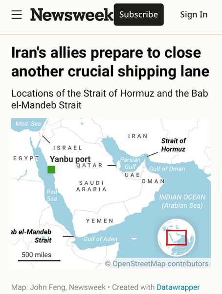
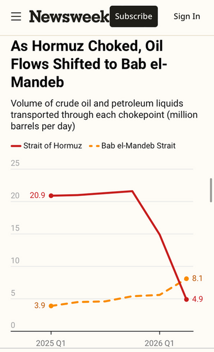
Yemen’s Houthis Are the Smallest Force With the Biggest Say in Trump’s War
https://www.newsweek.com/houthis-yemen-saudi-arabia-middle-east-iran-war-trump-12433106
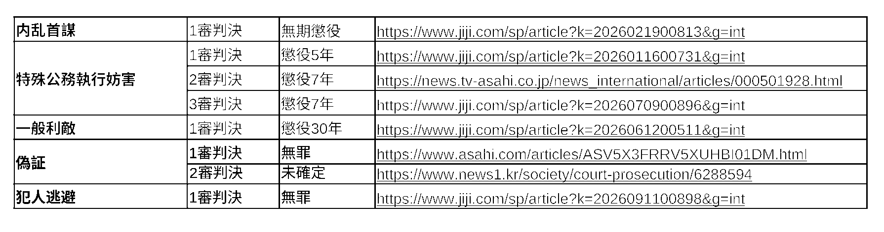
私が自殺するだろうという噂は恐らく今週下記のような日程が組まれていることと関係があるかと思います。もし私が本当にこういった事の背後にある理屈を理解しない白痴であった場合、立て続けに精神的ショックを受けることから自殺が見込まれると思った方がおられたかも知れないですね。またそのような噂を信じて更に別の噂を流した方もおられたかも知れませんが、他人が自殺すると知りながらそれを止めなかったり、自殺を促したりすることは犯罪ですのでもしそういった噂を流している方がおられるなら警察に通報してあげて下さい。
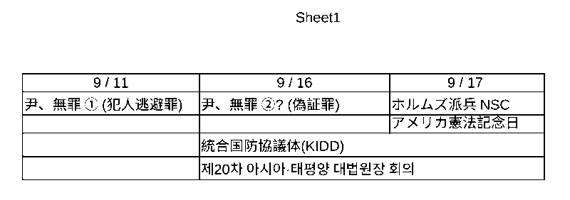
以前述べたように尹前大統領の特殊公務執行妨害容疑については既に最高裁判決が出ていますから、これについて新たに報道がなされることはほぼ無いと思います。また内乱首謀の2審 及び 一般利敵の2審についてもまだ結審の期日が指定されていないことから、当分の間何かインパクトのあるニュースが出ることはないかと思います。つまりこれら3つの事件については刑が確定していたり、今後重罪が確定する可能性があるにも関わらずほぼ報道されない不活性状態にあるといえます。一方先日1審で無罪が宣告された犯人逃避事件と恐らく明日1審と同様に2審でも無罪が宣告されるであろう偽証事件については重要性の低い事件であるにも関わらず「尹、無罪」が出ることから非常に大きなインパクトがあります。仮に韓国の司法がエンターテイナーなのだとすると、こういった心理的効果を計算したはずです。
下記は昨日開かれた尹前大統領の公判についての記事です。以前出た「尹、無罪」の影響がまだ続いている可能性もあるのでこれを引用することにしました。ここに出てくる「비화폰」とは「秘話폰」ですが、「폰」とは「휴대폰」の폰、phoneです。盗聴等を防ぐために尹前大統領や幹部ら、金建希等が使っていたものです。
서울고법 형사12-1부(재판장 이승철)는 14일 윤 전 대통령과 김용현 전 국방부 장관, 노상원 전 정보사령관에 대한 항소심 17차 공판을 진행했다. 이날 공판에서는 김 전 장관 측이 신청한 '비화폰 통화 검증'이 핵심 쟁점으로 떠올랐다.
(9. 14) "계엄 2, 3번 하면 된다고"...尹 비화폰 통화내용 검증 공방
https://www.fnnews.com/news/202609141518360882
🧑🍳 오늘의 부엌 영상:
https://drive.google.com/file/d/1xUgXmOHZx75uZbeUEouSEyouqQsxAUkw/view?usp=drivesdk
https://drive.google.com/file/d/1Zfdg_p2PCG6yrHqa5gHkQiMJ_OqGMxZR/view?usp=drivesdk
イエメンの武装組織フーシ派が紅海南部にある戦略的要衝「ハニシュ諸島」を制圧 サウジアラビア空軍基地も攻撃「大きな損害を与えた」と主張
https://newsdig.tbs.co.jp/articles/-/2944390
다음 기사에 의하면 어제 외교부 장관이 주한미군사령관을 만나고 한미 연합방위태세의 중요함을 강조했다는데요 호르무즈 파병과 관련이 있는지는 잘 몰랐습니다.
조현, 전직 주한미군사령관들 접견…연합방위태세 강조
https://www.yna.co.kr/view/AKR20260914165800504
もしかすると私が以前ネパール・中国国境で起きた洪水について述べたのでそれが原因で噂が流れたのかも知れませんが(その翌日髪を剃ったのもそういった噂を助長したかも知れません)、私がネパールの洪水やその中国での報道が気になっていたのはこれを覚えている方がおられるかは分かりませんが、以前私は韓国のプロ野球の試合にてサンダラ・パクが始球式をする際に(このような中年女性が好きではないという事を示す為に)サンダラ・パクという名に'Ms. Bad Luck'というあだ名を加えた作品のようなものをホームページに載せていたのですが、その直後に洪水が起きたので何か不吉なものを感じていたからです。中日関係については高市首相の台湾に関する発言が影響していることは皆様もご存じだと思いますが、昨日引用したように最近日本の政治家が台湾を訪問して行ったという発言は当時の高市首相の発言と同種のものだったのだと思います。下記は中国のニュースサイトにある記事です。
日本の超党派の親台湾派政治屋7人が8日から10日にかけて、中国の台湾地区を集団で訪問し、政治的結託活動を大々的に行った。台湾訪問期間中、この右翼勢力は「台湾有事は日本有事」という危険な謬論を蒸し返し、日本が米国を参考にいわゆる「台湾関係法」を制定し、台湾海峡問題に深く介入することを公然と鼓吹した。こうした一連の挑発行為は、中日間の四つの政治文書の精神に公然と違反し、中国の内政に乱暴に干渉し、台湾海峡の平和・安定及び中日関係の大局を恣意的に損なうものだ。
日本右翼勢力による日本版「台湾関係法」の喧伝に強く警戒すべき
http://j.people.com.cn/n3/2026/0914/c94474-20499400.html
昨日思ったのは「中日関係が悪いのは宮島が原因だ」という噂がまた流れているのではないかということですが、今調べることが困難ですのでとりあえず過去に引用した記事のリンクを貼り付けます。
中国、日本渡航自粛を呼びかけ 高市首相発言で安全に「重大リスク」
https://www.asahi.com/sp/articles/ASTCG61DWTCGUHBI03DM.html
水産物輸入停止「高市首相発言が理由」 中国
https://www.jiji.com/sp/article?k=2025111900851&g=int
日本の有識者、高市首相に台湾発言の撤回要求
https://jp.news.cn/20251209/311d2ed5507d401c990016b9ff5842f8/c.html
高市総理の台湾有事発言から半年 日中関係悪化で観光客減少など影響 中国外務省は発言撤回求める
https://newsdig.tbs.co.jp/articles/-/2647087
China criticizes Japan's draft proposal on revising security documents
https://english.news.cn/20260610/631d7aecf45b47ad803b110d1aca2d6f/c.html
이런 시각에 일어났으니 좀 작업을 한 후 다시 자겠습니다. 오늘도 오전 9시경에 마르야스에 가요.
これが現在流れている噂と何か関係があるかも知れませんので書きますが、登記情報提供サービスは下記ページに書かれてある通り直近で9/13, 9/19, 9/20, 9/21にメンテナンスの為停止するようです。このうち9/13は過去の日付ですが、もしこの日に何らかの理由でこのサービスを利用されようとされた方はここに書かれてある日を外してもう一度試してみて下さい。
https://www1.touki.or.jp/maintenance
私がこのようなことを書くのは私が過去に登記について書いたことが原因で現在何か噂が流れている可能性もあると思ったからです。絆會の指定解除(実際に指定が解除されるのは20日からですが)によりこの地域に住んでおられる方がヤクザに興味をお持ちになり、過去のそうしたことが思い起こされた可能性もあります。私はCoEvoの法人登記がどうしてあのような状態なのか、またヤクザと関係があるのかは分かりませんが、下記に述べるようなことは皆様が手数料を支払わなくともお手持ちのスマートフォンで確かめることが出来ますから一度試してみて下さい。
まず若い方はご存知でないかも知れませんが、会社(法人)の登記が誰でも取得可能であることは下記の法務省のサイトに「会社・法人の登記事項証明書及び登記簿の謄本・抄本については，どなたでも，所定の手数料を納付して，その交付を請求をすることができます」と書かれてある通りです。
https://www.moj.go.jp/MINJI/minji11.html
CoEvo株式会社のホームページは下記の通りですが、これのメニュー(スマートフォンですと右上のボタンからメニューを開けます)から本店所在地を確認してその住所にどういった用途の建物が存在するのか調べてみて下さい。(例えばGoogleにここに記載されている住所をコピペすればそのような事が可能です)
次に下記の「国税庁 法人番号公表サイト」にて検索欄にCoEvoと入力し、この会社の登記上の本店所在地を調べ上のホームページ住所と比較なさって下さい。(法人番号公表サイトが提供する住所が本店所在地であることはこのサイトのFAQ(よくある質問)に書かれてあるはずですし、皆様がご存じの会社名を入力することによって確認可能です)
https://www.houjin-bangou.nta.go.jp/
下記のサイトにて検索欄に皆様がご存じの「.jp」で終わる会社のドメイン名をいくつか入力して検索してみて下さい。次にここにcoevo.co.jpを入力して下さい。私が最初にこれをやってみて思ったのはこの会社が何らかの目的で作られたダミー会社なのではないかということです。
私が当時この会社の登記についてお伝えしようとしていたのは、実際にこの法人登記(履歴事項全部証明書)を取得してみると分かりますが、代表取締役の欄に「ハヤシダ・ジェフリー・バンス」との記載があることと、その代表取締役の住所がGoogleマップ等で調べてみるとどこかおかしいような気がする、ということだったのです。もちろんアマゾン・ジャパンの元社長であるジェフ(ジェフリー)・ハヤシダさんは社内のPhoneToolや在任中の刊行物等にはそういった記載が無かったものの、本当は「バンス」というミドルネームをお持ちだったのかも知れません。下記のファイルにも「ハヤシダ・ジェフリー・バンス」との記載がありますが、当時私は「ミドルネームを氏名の後に記すことは日本では一般的ではない」と思っていたので驚いていたのです。上に書いたように私が当時発見したことは大した事ではなかったのかも知れませんが、会社の登記が取得可能であること 及び CoEvoの法人登記(履歴事項全部証明書)に「ハヤシダ・ジェフリー・バンス」との記載があることについては事実ですので(当時私が主張していたのはこの氏名の問題でした)これが原因なのでしたら嫌がらせを控えて頂けると幸いです。
https://kagoshima-aid.net/download.php?dir=topix&fname=272-1.pdf
この会社は東京に本店がありますのでもし東京に行かれる方がおられたら現地を訪問してみて下さい。絆會の事務所を見に行くよりましだと思います。ちなみに登記情報提供サービスを利用する場合は「一時利用」を選択されると手続が簡単です。
26. 9. 14
일본에서 제가 자살할 것이라는 소문이 퍼지고 있다면 역시 그 저 때문에 중일 관계가 악화되었다는 소문이 다시 났기 때문일지도 모릅니다. 저는 오늘은 이에 대해 다음 기사를 인용하는 것 밖에 아무 것도 하지 않겠지만 중국 정부가 저와 같은 사람 때문에 화낼 가능성보다 마오쩌둥이 작고하신 날에 대만을 방문하고 다음과 같은 걸 했다는 사람 때문에 화낼 가능성이 더 높을 것이라고 생각하는데요. 제가 고추를 사랑하는 건 한국인처럼 살아 가고 싶기 때문인데요 저는 마오쩌둥이 매운 음식을 중시하셨다는 것까지 알고 있습니다.
北村氏は、台湾は日本にとって素晴らしい親友だと言及。2011年の東日本大震災での台湾からの支援に触れ、かけがえのない友人に危難が迫っていれば「われわれは全力で立ち向かう」と話した。 その上で、日本が台湾の危難に立ち向かう気概を世界に示し続けることが大切だとし、そのために米国内法の「台湾旅行法」や「台湾関係法」の日本版を作り、政府高官の相互交流や防衛協力を促したいとの考えを示した。
頼総統、北村晴男参院議員らと面会 民主主義国家が団結する必要性強調／台湾
https://japan.focustaiwan.tw/politics/202609090006
* この2, 3日に書いた誤解を招きうる文章や英語の記事の引用等を削除しました。
(Wifi spot에서) ホルムズ派兵に関しては17日に開かれるNSCが派兵の手続上、最も重要かつ注目されるのではないかと思いますが、これについての情報はあまり出てないみたいです。下記もKIDD開催地であるプサンの報道社であるからか、KIDDについて主に述べています。ただNSCについても少しだけ述べられてあるので引用してみます。
한미 국방 당국의 고위급 회의체인 ‘통합국방협의체’(KIDD) 회의가 오는 16일부터 사흘간 부산에서 개최된다. 미국이 동맹국들에 역할 확대를 압박하는 상황에서 이번 주 예정된 한미 협의체와 국가안전보장회의(NSC) 회의에서 호르무즈 파병 논의가 최대 분수령을 맞을 전망이다. (中略) 정부는 오는 17일 국가안전보장회의(NSC) 상임위원회 회의를 열고 호르무즈 해협 관련 대응책을 집중적으로 논의할 전망이다. 조사단은 현지 상황과 우리 군의 활동 여건 등을 담은 상세 조사 결과를 보고할 것으로 알려졌다.
이번주 부산서 열릴 한미 협의체, 호르무즈 파병 중대 분수령
https://mobile.busan.com/view/busan/view.php?code=2026091410124118734
私が「韓国がホルムズ海峡への派兵を検討している」と述べてから急に迫害が強まったのでもしかすると日本ではこのことについて報道されていないのではないかと思ったのですが、ざっと調べてみた限り産経新聞の9月10日朝刊にはこの記事が出ていました。ただまだほとんど報道がなされていないのは確かであるようです。
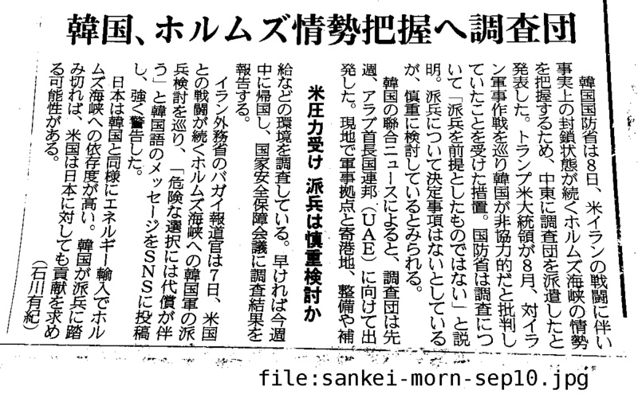
(Wifi spot에서) 映像の方が伝わるかも知れませんので、これを紹介します。
https://www.youtube.com/live/0i_dhPDG9QU
見当違いなら良いのですが、日本におられるコリアンの方々の中にこの件についてご存知でない方もおられるかも知れないと思いこれらを紹介しています。
16~18日に釜山（プサン）で開かれる韓米統合国防協議体（KIDD）に続き、17日に国家安全保障会議（NSC）で派兵問題が論議されるものとみられ、事実上大統領の最終判断だけが残っているのではないかという観測も出ている。
原題: “호르무즈 파병, 당내 반대 상당해”…민주당서도 신중론 나와
https://www.mk.co.kr/jp/politics/12151962
Korea and the United States plan to hold their senior-level regular defense talks this week, the defense ministry said Monday, amid Seoul weighing military deployment to the Strait of Hormuz. The biannual Korea-U.S. Integrated Defense Dialogue (KIDD) will be held in the southeastern port city of Busan from Wednesday through Friday, according to the ministry. (中略) The allies did not specify, but they are widely expected to discuss the possibility of Seoul's military deployment to the Strait of Hormuz amid Washington's pressure on Korea to join efforts to secure the crucial waterway. Korea sent a team tasked with assessing the security situation near the Strait of Hormuz to the United Arab Emirates (UAE) last week. The move raised speculation that Korea is seriously considering military deployment to the strait, but the government has stressed nothing has been decided on the issue. Iran has publicly warned against any potential military dispatch to the area, warning such a move would lead to "serious consequences."
Korea, US to hold high-level defense talks amid Hormuz deployment consideration
私は「トランプ大統領がホルムズ派兵を要求したりして韓国をいじめているように見えるのは宮島のせいだ」という噂が流れているのではないかと思い様々なことを書いていましたが、どうもそうではないようなので今後はあまり述べないことにします。(私はここに書くことを機械翻訳を通して韓国の方々もお読みになるだろうと思い、日本語を使っています)
下記は16日からプサンで開かれる「統合国防協議体」(KIDD)についての記事です。ただ記事の写真にあるようにこのような会議は以前から開かれていたようです。ここでホルムズ派兵について話し合われるかは不明であるものの、アメリカは中間選挙の前までに派兵することを求めており(미국은 오는 11월 중간선거 전까지 파병을 요청했다고 알려졌지만)、戦時作戦統制権(전시작전통제권, 略して전작권)転換についても話し合われるそうです。전작권転換もアメリカ中間選挙の時期あたりで目標年度を決めるつもりらしいです。(국방부는 올해 11월에 양국 국방장관 참석 하에 열릴 한미안보협의회의(SCM)에서 전작권 전환의 목표 연도를 정한다는 구상을 하고 있다) 戦時作戦統制権(전작권)転換というのは恐らくアメリカのNSSに沿った、「自分の国は自分で守る」ものだと想像しています。プサンでこのような会議が開かれることは異例的だそうですが(한국에서 열리는 KIDD 회의가 서울이 아닌 부산에서 진행되는 것도 이례적이다)、MASGA関連の視察等があるそうなので、その為だとこの記事は暗に述べているようです。(미국 측 당국자들은 방한 기간 한국 조선소들을 방문할 것으로 알려졌다)
군이 KIDD 회의를 앞둔 지난주 아랍에미리트(UAE)에 파견한 현지조사단은 현지 정세와 안전 상황 등을 파악하고 지난 10일 귀국했다. 미국은 오는 11월 중간선거 전까지 파병을 요청했다고 알려졌지만, 정부는 파병과 관련해 정해진 것이 없다며 신중한 입장이다. 전작권 전환 문제도 이번 회의에서 다뤄진다. 국방부는 올해 11월에 양국 국방장관 참석 하에 열릴 한미안보협의회의(SCM)에서 전작권 전환의 목표 연도를 정한다는 구상을 하고 있다. 한국에서 열리는 KIDD 회의가 서울이 아닌 부산에서 진행되는 것도 이례적이다. 한미 조선협력 사업인 '마스가(MASGA) 프로젝트'와 관련한 논의가 비중 있게 다뤄질 수 있다는 관측이 나온다. 미국 측 당국자들은 방한 기간 한국 조선소들을 방문할 것으로 알려졌다. 부산 인근에는 HD현대중공업(울산)과 한화오션(거제) 조선소가 있다.
한미, 16일부터 부산서 통합국방협의체…전작권 전환·조선건조 협력 등 논의
https://mobile.newsis.com/view/NISX20260914_0003787973
尹前大統領の内乱首謀事件 及び 一般利敵事件について2審判決がいつ出るのか昨日調べてみたのですが、よく分からなかったのでまだ期日が指定されていないのかも知れません。内乱首謀については下記記事に「다만 3개월 내 2심 선고를 내리도록 한 특검법을 적용받지 않는 만큼, 이 사건의 결론이 나오기까지는 오랜 시간이 걸릴 것이라는 전망이 나옵니다」とあるように「3ヶ月以内に判決を下すことを定めている特検法」(3개월 내 2심 선고를 내리도록 한 특검법)が適用されないので非常に時間がかかるだろうとも考えられているようです。これは以前述べた「特別検察法の6·3·3規定」のことです。一般利敵事件も同じようにして6·3·3規定が適用されず中々判決が出ないのかも知れません。今度北朝鮮にドローンを送り込んだ大学院生らに判決が下されるとのことでしたが、この大学院生らの容疑も「一般利敵」ですのでここで混同が生じるかも知れません。
다만 3개월 내 2심 선고를 내리도록 한 특검법을 적용받지 않는 만큼, 이 사건의 결론이 나오기까지는 오랜 시간이 걸릴 것이라는 전망이 나옵니다.
(6. 25) 尹 내란 우두머리 항소심 재개…특검, 사형 선고 요청
https://www.yna.co.kr/view/MYH20260625019100038
今度Wifiスポットに行った時に調べてみますが、法院の「나의 사건 검색」機能を使えば何か分かるかも知れません。下記のページにある手順を法院名を「서울고등법원」、当事者名を「윤석열」、事件番号を下記の通りそれぞれ置き換えて実行してみて下さい。
- 内乱首謀: 2026노648
- 一般利敵: 2026노1560
https://anissatta.github.io/home-project/kim3/
ナムウィキの内乱首謀裁判についての記事には2審(항소심)の公判期日が10月15日(21차 공판기일 (2026년 10월 15일))まで記載されていますが、結審と宣告の期日については述べられていません。
12.3 내란/재판/윤석열·김용현·조지호·노상원·김용군·김봉식·목현태·윤승영
https://namu.wiki/w/12.3%20내란/재판/윤석열·김용현·조지호·노상원·김용군·김봉식·목현태·윤승영
一般利敵についても10月16日(2026년 10월 16일 - 8차 공판기일)までしか書かれておらず、結審と宣告の期日については述べられていません。
12.3 내란/재판/윤석열·김용현·여인형·김용대
https://namu.wiki/w/12.3%20내란/재판/윤석열·김용현·여인형·김용대
조(曺)희대大法院長はまだ「立場の発表」をしていないようですが、以前述べられていた「来週立場を発表します」という約束は完全に無視されましたし((28일) 조 대법원장은 당일 퇴근길에 “다음 주 공식 입장을 내겠다”고 했으나, 이후 부친상 등으로 입장 발표가 미뤄진 뒤 아직까지 입장을 표명하지 않고 있다)、下記記事はソウルで「アジア太平洋大法院長会議」(아시아·태평양 대법원장 회의)が開かれる関係で20日以降になるだろうとしていますが、どうしようもないような感じがします。
13일 법조계에 따르면 조 대법원장은 지난달 말 청와대가 대법관 후보 재제청을 요구한 뒤로 2주 넘게 침묵을 지키고 있다. 조 대법원장은 지난달 18일 노태악 전 대법관 후임으로 손봉기 대구지법 부장판사를 제청했지만, 청와대는 열흘 뒤인 28일 “실질적 협의 없는 일방적인 서면 제청”이라며 재제청을 요청했다. 조 대법원장은 당일 퇴근길에 “다음 주 공식 입장을 내겠다”고 했으나, 이후 부친상 등으로 입장 발표가 미뤄진 뒤 아직까지 입장을 표명하지 않고 있다. 청와대는 11일 신속한 재제청 절차 진행을 거듭 요구하고 나섰다. (中略) 조 대법원장이 공식 입장을 낼 시점도 관심사다. 당장 16∼19일 서울에서 열리는 제20차 아시아·태평양 대법원장 회의가 예정돼 있는 만큼, 이 기간은 피할 것으로 점쳐진다. 예상보다 빠른 14∼15일쯤 입장을 내거나, 아예 20일 이후로 시점을 미룰 것으로 보인다.
조희대, '대법관 재제청' 2주 넘게 고심 중 外 [법조브리핑]
https://m.news.nate.com/view/20260914n03738
下記によると今週17日にホルムズ派兵に関するNSC(国家安全保障会議)が開かれるとのことです。その他にも今週は国防部が「統合国防協議体」(KIDD)を開き韓国とアメリカの安保上の連携について議論したり、18日にはアメリカに対する投資に関連する署名が行われたりとホルムズ派兵に関連する出来事が多いみたいです。先のナムウィキの記事には「만일 정부가 파병을 결정한다면, 국가안전보장회의에서 파병안을 의결한 뒤에 국회의 동의를 받아야 한다」とあったので17日のNSCで議決された後に国会にて結論が出されるはずです。国会が承認しなければ派兵は出来ないはずですが、KIDDの開催や対米投資など派兵に関連しそうな日程が既に組まれています。
지난주 국방부 현지조사단이 중동 현지 조사를 마치고 귀국하면서 정부의 실무검토는 한 단계 진전됐다. 정부는 오는 17일 국가안전보장회의(NSC) 상임위원회 회의를 열고 호르무즈 해협 관련 대응책을 집중적으로 논의할 전망이다. 조사단은 현지 상황과 우리 군의 활동 여건 등을 담은 상세 조사 결과를 보고할 것으로 알려졌다. 외교·안보 고위급 협의도 이어질 전망이다. 조현 외교부장관은 이르면 이번 주 후반 미국 방문 일정을 조율하고 있다. 마코 루비오 국무장관과의 외교장관회담에서는 호르무즈 해협 문제를 비롯해 한미동맹과 대미투자 등 양국 간 주요 현안이 논의될 것으로 보인다. 특히 호르무즈 해협과 관련해 미국 측의 요구 수준을 확인하고 우리 정부가 검토 중인 기여 방안에 대해 의견을 교환할 것으로 예상된다. 국방당국도 이번주 부산에서 차관보급 실무협의체인 통합국방협의체(KIDD)를 개최하는 방안을 유력하게 검토하는 것으로 알려졌다. KIDD는 한미 간 주요 국방 현안을 점검하고 연합방위태세 강화 방안을 논의하는 정례 협의체다. 이번 회의에서는 한미 연합방위태세와 주요 안보 현안을 점검하는 가운데 중동 정세와 호르무즈 해협의 해상 안보 협력 방안 등이 논의될 가능성이 있다. 호르무즈 파병 논의와 맞물려 오는 18일 예정된 대미투자 관련 서명 일정도 주요 변수로 꼽힌다. 김정관 산업통상자원부 장관은 미국 측과 막판 협상을 진행한 뒤 지난 13일 귀국했다. 한미 간 대미투자 협상이 막바지 단계에 접어든 가운데 18일 관련 합의가 공식 발표될 가능성이 거론된다. 청와대 고위 관계자는 앞서 대미투자와 파병 문제가 연결돼 있다고 보지 않는다는 취지로 선을 그은 바 있다. 다만 그동안 미국이 한국의 대미투자 이행 문제를 한미 간 주요 현안과 함께 거론해왔다는 점에서 이번 합의가 한미관계에 미칠 영향은 주목된다. 대미투자 합의가 한미 간 경제 현안의 불확실성을 해소하는 계기가 될 경우 안보 분야 협의에도 우호적인 여건이 조성될 수 있다는 관측이 나온다.
호르무즈 파병 이번주 분수령…NSC·한미협의 주목
https://v.daum.net/v/20260914050317162
🧑🍳 오늘의 부엌 영상:
https://drive.google.com/file/d/1IZD5iLPL0rw7D9QmdmYI7CLSYlWOvnr9/view?usp=drivesdk
https://drive.google.com/file/d/1B6LjgxG3GB0RPsMkT-qTY4fcwp5vXspo/view?usp=drivesdk
ホルムズ海峡巡る湾岸諸国会議延期 新航路公表予定も一部の国から要請とイラン外務省
https://news.tv-asahi.co.jp/news_international/articles/000533144.html
어젯밤에 꾼 꿈 속에서 당신을 만났지만 뭘 허고 있었는지는 여기에는 쓰지 않습니다. 오늘도 오전 9시경에 마르야스에 가요.
韓国がホルムズ派兵を検討しているという話は最近突然出てきたように思えますが、下記のナムウィキの記事を読んでみてもやはり最近忽然と出てきたとしかいえないようです。これは個人が作ったサイトですが、典拠となるニュース記事へのリンク(クリップのアイコン)も示されていますので、気になる方は一通り読んでみて下さい。NSSの記事にもあったように現在のアメリカ(トランプ2期)は極端な自国中心主義ですが、私を迫害する人々を見ているとまだ新しいアメリカに適応出来ていないというか、世界の警察である古き良きアメリカを想定されている方が多いようです。またトランプ大統領がイラン戦争を始める決断をされたのにはイスラエルが関係していると言われています。下記はそれについての記事ですが、こういったことについても調べてみて下さい。
(4. 7) How Trump Took the U.S. to War With Iran
https://www.nytimes.com/2026/04/07/us/politics/trump-iran-war.html
3월 14일, 도널드 트럼프 미국 대통령이 자신의 트루스 소셜 계정에 중국, 프랑스, 일본, 한국, 영국 5개 국가[1]를 직접 거명하며, 미국이 홀로 해상을 보호하는 시대는 끝났으니 이들 5개국이 즉각 자국 군함을 파견해 통로 확보에 나설 것을 요구했다. (中略)
트럼프 대통령은 3월 17일 군함 파견 등 지원 요청에 동맹국들이 난색을 보이자 "우리는 더는 NATO 국가들의 지원이 필요하지 않다. 일본, 호주 혹은 한국도 마찬가지"라며 강한 실망감을 드러냈는데, 3월 18일 백악관은 호르무즈 연합군 카드를 접지 않고 여전히 추진하고 있다고 했다. (中略)
4월 1일, 트럼프는 다른 나라들이 해야 한다는 말을 하던 중 한국에 대해 주한미군 주둔 사실까지 거론하며 서운함을 내비쳤다. "Let the European countries do it. Let South Korea, who was not helpful to us, by the way. ... You know, we only have 45,000 soldiers in harm's way over there, right next to a nuclear force. Let South Korea do it. 유럽 나라들이 하게 하자. 한국이, 그나저나 우리에게 별로 도움이 되지 않았던... 알다시피, 우리가 4만 5000명의 군인을 험지에, 핵 무력(북한) 바로 옆에 두고 있다. 한국이 하게 하자." 이는 미국이 북한의 위협으로부터 한국을 방어해주고 있음에도 한국이 호르무즈 해협 파병이라는 동맹의 요청에 응하지 않았다는 불만을 표출한 것으로 해석된다. 그 와중에 약 2만 8,500명인 주한미군 규모를 이전에도 여러 차례 그랬듯 거짓으로 부풀려 말했다. (中略)
9월 3일, 한국 정부가 국회에 호르무즈 해협 파병 동의안을 제출하기 위해 내용을 검토 중이라고 JTBC가 단독 보도했다. 그러나 청와대는 관련된 사안은 결정된 바 없다며 부정했다. 이후 SBS에서 추가적으로 군 고위당국자발 정보의 단독 보도를 내놓으면서 파병이 검토 중인 것은 사실일 가능성이 높아졌다. 폭발물 처리반, P-8 포세이돈, 군수지원함 등이 파병대상이다. (中略)
(반응) 정부는 당초 호르무즈 해협에 파병하라는 트럼프 대통령의 요구에 "국제사회와 협의 중"이라며 원론적인 입장만 표명하며 결정을 유보하고 있었다. 그러다 9월, 복수의 정부 소식통에 따르면 정부는 군수 지원함, 초계기 등과 같은 비전투병 위주로 파병을 보내는 것을 검토 중이라고 한다. 만일 정부가 파병을 결정한다면, 국가안전보장회의에서 파병안을 의결한 뒤에 국회의 동의를 받아야 한다. 그런데 파병 검토 보도가 나오자 여권에서도 적잖은 반발이 나오는 중이라 정부에서 파병 결정을 해도 국회의 문턱을 넘지 못 할 가능성이 있다.
트럼프의 호르무즈 해협 파병 요구
https://namu.wiki/w/트럼프의%20호르무즈%20해협%20파병%20요구
下記はNewsisの裁判スケジュールです。今後は皆様ご自身で調べて下さい。
▲오후 2시 '12·3 비상계엄' 내란 우두머리 등 혐의 윤석열 전 대통령 외 7명 항소심 16차공판, 서울고법 형사12-1부, 417호
[오늘의 주요일정]법조(9월14일 월요일)
https://mobile.newsis.com/view/NISX20260913_0003787449
26. 9. 13
이 몇 년 동안에 우리 사이에 해를 준 소문들이 SNS를 통해 퍼졌다는 건 분명하게 보이는데요. 운좋게 당신은 이런 일이 없던 시대도 알고 계시니까 아마 제가 SNS를 싫어하는 것에 대해 약간은 이해해 주실 것이라고 믿고 있습니다. SNS를 운영하는 미군인들이 다 억만 장자이라는 사실을 보면 이 도구가 운영자에게 매우 이익을 내는 일이라고 아실 것인데요. 모두가 이용하는 SNS는 이런 이유로 더 이익을 내도록 개량 받은 일일 것입니다. 지금까지 이런 일이 우리에게 이익을 준 적이 한번도 없고 오히려 해만 준 건, 아마 그런 도구가 인간의 사악한 감정을 이용해 확대하는 시스탬을 가지고 있기 때문인데요. 저는 이런 이유로 우리가 다시 만나거나 결혼할 경우 이에 대한 소식을 여러분들이 알기 위해선 수 년 정도 필요할 것이라고 생각합니다. 그런 도구는 단지 인간의 사악한 감정을 증폭하는 효과를 가지고 있기 때문에 저는 만약 당신과 결혼하고 아이를 가질 경우 그 아이가 성인이 되기 전에 그런 도구를 주지 않을 것입니다.
以前「尹アゲインというのは法的に実現不可能な概念であるにも関わらず、人々を突き動かして不可能を可能にする呪文のようなものである」と述べましたが、私が一例として思いつくのは下記の例です。ここで述べられているのは「新しい国家が誕生すればこれまでの憲法は意味が無くなるから尹前大統領が復帰することは可能である」ということだと思いますが、このような本当に馬鹿馬鹿しいことが今も続いているようです。(よく覚えていませんが、この牧師は何度か逮捕されています)
チョン牧師は演壇に上がって「必ず2年以内に北朝鮮は自ら崩れることになっている。 2年以内に自由統一が実現する」とし、「その時は、尹錫悦（大統領）を自由統一大統領に復帰させなければならない。」と主張した。
(25. 4. 26) 原題: ‘2년 안에 北 무너진다’는 전광훈…“윤석열, 통일 대통령으로 복귀시켜야”
https://www.mk.co.kr/jp/politics/11302285
下記は尹アゲインの犠牲者となった人々についての記事ですが、最近の若者が攻撃的なのもSNSが関係していると思います。(以前手紙に書いたテストステロンについての文は国防総省についてのニュースとは全く関係ありませんでした)
(8. 27) 韓国最高裁、ソウル西部地裁乱入の5人に約11億7000万ウォンの損害賠償請求
https://news.yahoo.co.jp/articles/06c5b1eb66c37cad18b2934fb5a895d04c7a1dad
尹前大統領の裁判についてのWikiを参考に最近開かれた公判についての記事を下記に示します。
• 内乱首謀
(9. 7) 여인형 "메모 속 'ㅈ'은 노상원 아닌 강호필…계엄 반대" 증언
https://www.yna.co.kr/view/AKR20260907158100004
• 一般利敵
(9. 4) 尹 ‘평양 무인기’ 항소심…특검·변호인, 일반이적죄 ‘이적의사’ 놓고 공방
https://www.freezinenews.com/news/articleView.html?idxno=29443
• 偽証については16(水)に2審判決が出ます。
이번주 尹 '한덕수 재판 위증' 2심 선고…'계엄 정당 메시지 전파' 첫 재판
https://mobile.newsis.com/view/NISX20260911_0003786454
• 以前北朝鮮にドローンを送り込んだ容疑で起訴されていた大学院生に対する判決も下されるそうです。この大学院生の容疑も尹前大統領のと同じ一般利敵罪です。
북한에 무인기 날린 대학원생 1심 결론 나온다…일반이적 혐의[주목, 이주의 재판]
https://www.news1.kr/society/court-prosecution/6288182
(Wifi spot에서) 尹前大統領の内乱首謀事件がまだソウル高裁で審理中であることを示す証拠として、下記の傍聴案内を示します。
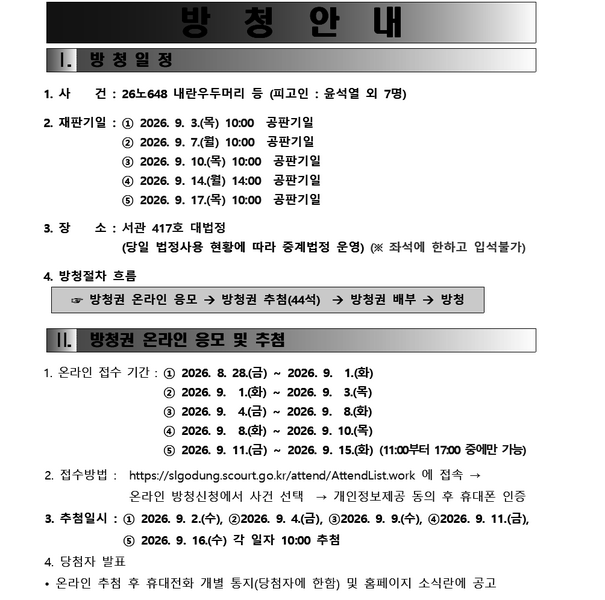
2026노648(내란우두머리 등) 온라인 방청권 추첨 안내
https://slgodung.scourt.go.kr/dcboard/new/DcNewsViewAction.work?seqnum=20789&gubun=41
下記は一般利敵(平壌無人機事件)のです。
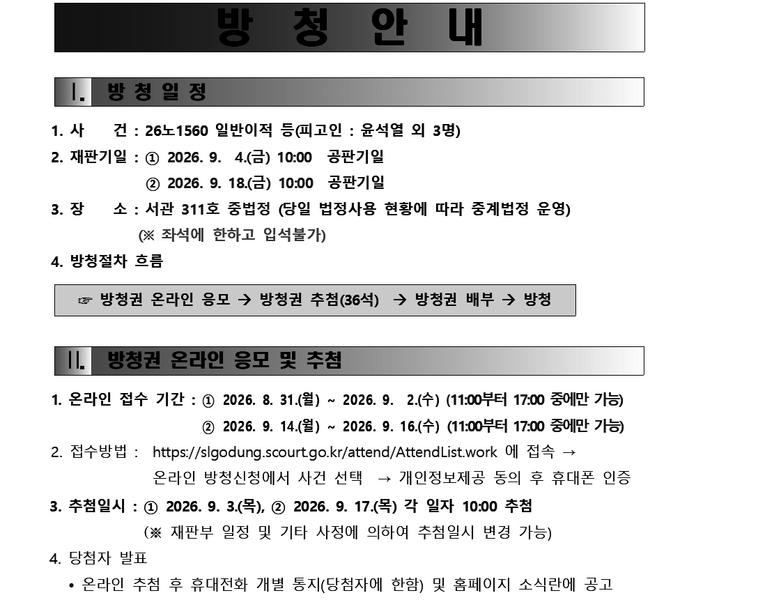
2026노1560(일반이적 등) 온라인 방청권 추첨 안내
https://slgodung.scourt.go.kr/dcboard/new/DcNewsViewAction.work?seqnum=20788&gubun=41
下記は偽証事件の宣告公判のです。
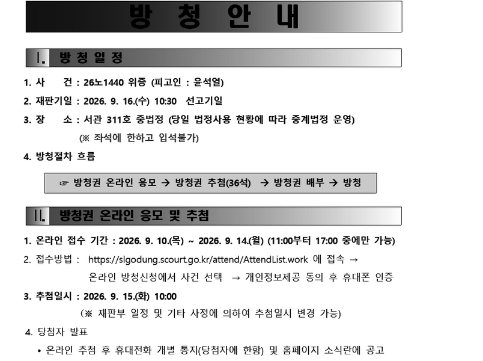
2026노1440(위증) 온라인 방청권 추첨 안내[2026.9.16.(수) 10:30 선고기일]
https://slgodung.scourt.go.kr/dcboard/new/DcNewsViewAction.work?seqnum=20786&gubun=41
犯人逃避については2審がまだ始まっていないので下記は先日の「尹、無罪」の1審宣告公判のです。
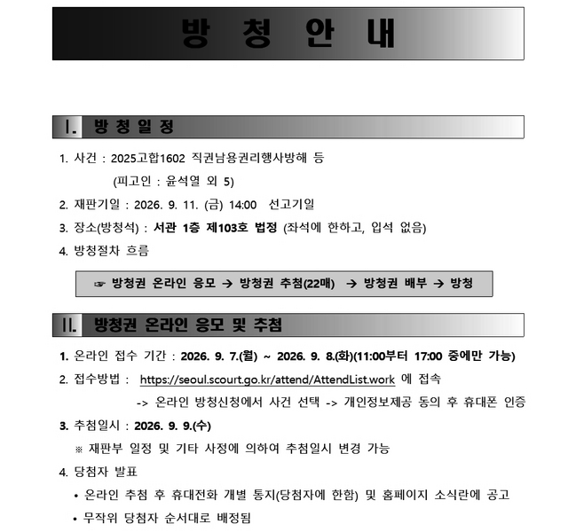
주요사건(형사) 방청안내[2025고합1602 / 2026. 9. 11. (금) 14:00 선고기일]
https://seoul.scourt.go.kr/dcboard/new/DcNewsViewAction.work?seqnum=20831&gubun=41
下記は尹対策です。
Former spec ops commander claims Yoon ordered capture of politicians so he could 'shoot them dead'
Impeached president stages prison cell protest in his underwear
Disgraced South Korean ex-president compares himself to Jesus in bizarre Easter message
https://www.independent.co.uk/asia/east-asia/south-korea-yoon-suk-yeol-jesus-easter-b2952748.html
Wifiスポットから離れますが、私が自殺するという集団ヒステリーのような妄想はホルムズ派兵についての政府の決定が出次第収まると思います。今日手紙に書いたように私があまり危機感を感じていないのは韓国人である彼女を信頼しているからです。
恐らく最近外国の方々までが私を観察しに来られるようになったのは下記の「尹、無罪」についてのニュースが原因だったのだと思います。この記事をよく読めば分かる通り今回の無罪は「犯人逃避罪」についての判決です。
韓国のソウル中央地裁は１１日、職権乱用容疑がかけられた元国防相を大使に任命して海外逃亡させたとして、犯人逃避罪などに問われた前大統領の尹錫悦被告に対し、無罪を言い渡した。特別検察官は懲役５年を求刑していた。
(9. 11) 前大統領の尹被告に無罪 大使任命による犯人逃避罪―韓国地裁
https://www.jiji.com/sp/article?k=2026091100898&g=int
はっきりとは分かりませんが、こういった法院(裁判所)の姑息なテクニックにより頭の悪い若者らが「尹アゲイン」を合唱し、李在明大統領の支持率が低下したせいで政府がホルムズ派兵などというギャンブルをせねばならないという側面もあるかと思います。こういったことは若者らが情報を読み解く能力を身につけない限り防ぎようがありません。大法院長と大統領というのはそういう意味で犬猿の仲なのだと想像します。
返却:
https://drive.google.com/file/d/1uWcEuhslJL5OkqRTWIP2Ijl0-HSaCeNz/view?usp=drivesdk
오늘은 이걸 빌렸어요(이번엔 장난을 치는 아이들에게 이길 수 있었습니다):
https://drive.google.com/file/d/15C1_xzrfgxWcqJwIUuKtWnV0JxYmNGr1/view?usp=drivesdk
https://drive.google.com/file/d/14Sclj8zxt-8G9bN2pOL9RrphophY5ZnO/view?usp=drivesdk
https://drive.google.com/file/d/1mV4clCOuFY_5enRp-G49sYY-VKM_hROK/view?usp=drivesdk
下記の今週の裁判スケジュールには「김건희」(金建希)の公判が一つもありませんが、これは記事の誤りか、あるいは先週매관매직事件(2審)が結審まで終わり、22日の宣告公判を待つのみの状態となっているからだと思われます。下記はいずれも尹前大統領の公判ですが、16日(水)の偽証容疑の宣告公判については無罪か軽い罪となる可能性が高いです。(1審の判決を確認して下さい) 以前にも書いたように尹前大統領の複数の刑事事件のうち偽証についてのものが無罪となったからといって、例えば内乱首謀の最新の判決である無期懲役には影響しません。このようなことを事前に書いていても、今週の判決の翌日にはこの地域でオートバイが早朝から騒音を発したり、コンビニの前で若者らが酒を飲みながら寝そべったり、老人までが私に暴力を振るおうとする事態がかなり高い確率で発生することでしょう。この偽証事件の2審(항소심)宣告公判が金建希の매관매직事件の2審宣告公判の直前に配置されていることは何か意味のあることだと私は思います。金建希の매관매직事件2審宣告(22日)時には恐らく1審と同様、有罪判決が下されるでしょうから、この地域に住んでいる方々は落胆したり、憤慨されたりされるはずです。ただ直前に「尹前大統領、無罪!」というニュースが出ることにより(日本のSNS等には100%このような事実を完全に伝えないニュースが流れるはずです)そういったことが緩和されるだけでなく「あいつは無実の我らが同胞・尹前大統領を非難しただけでなく、その夫人まで侮辱しているけしからん奴だ」という合意が生まれ私が皆様から犯罪に近いか犯罪そのものの被害を被る事態が起こりうるのです。はっきりとは覚えていませんが、尹前大統領の偽証事件1審宣告直後にも金建希の何らかの宣告公判があったかも知れません。たしか当時も似たような状態にこの街が陥っていたかと思います。
14일(월) 서울고법, ‘내란우두머리 등 혐의’ 등 윤석열 전 대통령 외 7명 항소심 16차 공판(오후 2시)
16일(수) 서울고법, ‘위증 혐의’ 윤석열 전 대통령 항소심 선고(오전 10시 30분)
서울중앙지법, ‘직권남용권리행사방해 등 혐의’ 윤석열 전 대통령 외 1명 1차 공판준비기일(오후 2시)
17일(목) 서울고법, ‘내란우두머리 등 혐의’ 등 윤석열 전 대통령 외 7명 항소심 17차 공판(오전 10시)
18일(금) 서울고법, ‘일반이적 등 혐의’ 등 윤석열 전 대통령 외 3명 항소심 7차 공판(오전 10시)
서울고법, ‘일반이적 등 혐의’ 등 윤석열 전 대통령 외 3명 항소심 8차 공판(오후 2시)
(이번주 법조 일정) 9월 14일~9월 19일
https://www.lawtimes.co.kr/news/articleView.html?idxno=226257
以前述べたように私が鶏肉ばかり買うようになったのは韓国がホルムズ派兵を検討中であることと関係があります。豚肉をイスラム教徒の方は食べませんし、チキンもこの場合では(戦争に参加しないという)良い暗示となると思われたからです。ただこのことが原因で何か噂が流れた可能性もあるので今日はソーセージでも買おうかと思います。
🧑🍳 오늘의 부엌 영상:
https://drive.google.com/file/d/1jT45okyggSq0XGR0pCKQLrvUWEMYVnGB/view?usp=drivesdk
https://drive.google.com/file/d/11nOSBab7fBoSwrvh-0MjZuf-7BA5Jc3W/view?usp=drivesdk
President Lee reassures public over oil prices amid escalating Middle East tensions
제가 전에 쓴 그로네코 야마토에 관한 글에서 한 일본어 학교에 대한 부분을 삭제한 건 네팔에서 일어난 홍수 때문입니다. (그 센터엔 네팔 분 같은 분도 계셨으니까) 사람들이 소문을 내는 건 그들이 뉴스를 안 보고 너무 무식하기 때문일지도 모르네요. 오늘도 오전 9시경에 마르야스에 가는데요. 어젯밤에 꾼 꿈 때문에 한 가설이 생각났는데 그건 그 센터 내에 있는 사람들이 한 이유로 제가 여전히 그곳에서 일을 하고 있다는 소문을 내고 있다는 가설입니다. 다만 이것도 잘못일 수도 있습니다. PS: 어제 서울에서 호르무즈 파병에 반대하는 집회가 열린 것 같네요. 이 일에 대한 기사는 여러 가지 있었지만 제목이 자극적이기 때문에 이걸 선택했습니다.
“尹도 감히 못 한 해외 파병… 이재명 정부에 깊은 배신감”
https://m.wikitree.co.kr/articles/1159076
26. 9. 12
제가 최근에 베트남에 관한 일을 여러 번 한 식으로 표현한 건 호르무즈 파병에 반대하시는 분들 사이에 한국이 베트남에 하던 파병을 인용하시는 분이 있거나 최근에 미국 해군 장관으로서 지명 받았다는 Hung Cao씨가 베트남인이시기 때문입니다. 만약 대한민국이 호르무즈 해협에 파병할 경우 그분에 대한 일이 더 한국 내 뉴스 기사 등에 등장할지도 모르는데요. 그러나 저의 개인 정보를 수집하는 바보와 같은 일본 사람들은 다른 해석을 했을 것입니다. 그리고 도서관에 관한 일 때문에 그로네코 야마토의 쓰레기 등이 다시 거짓말을 했을 수도 있는데요. 이런 죽음을 두려워하지 않는 일본 사람들을 우선 호르무즈 해협에 보내면 되는데요.
私が写真や動画のアップロードに使用しているのはDocuments (by Readdle)というアプリの、かなり以前にダウンロードしたバージョンです。これのネットワーク機能を介してGoogle Driveにアクセスしていますが、これを使うと何故か大きなファイルであっても辛抱強く待てばアップロード出来ることが多いのです。
(外出中) またホルムズ派兵を最終的に決定するのは国会だと思いますが、国会は国民の代表であるはずなので昨日手紙に書いたのはそのことです。
恐らく私が自殺するなどといった噂を流している方は李在明大統領についてよく理解しておらず、李在明大統領はアメリカに言われて泣く泣くホルムズ派兵を検討しているのだと思われているのだと思います。私は李在明大統領はむしろ乗り気で、ホルムズ派兵を契機に自身の政策にとって有利となる何かを引き出せると考えておられるだろうと思っています。
私は図書館のすぐ近所に住んでいますので、読みたい本があればすぐ借りて、皆様にお見せした図書を返却する前に返してしまうという事がよくあります。昨日図書館の前に車を停めていた方にはそれと分かるよう、表紙を見せつけたのですが、気付かなかったようです。(昨日返却したのはフランスについての本でした) 私は私の個人情報を収集しておきながら、いつも的外れな解釈をする愚かな人々に抗議する為にこのような事をしています。現在借りているのは下記の5冊です。明日はこれらをまとめて返すことにします。
https://drive.google.com/file/d/16XAPMhIJzseLfhdVMaB1PpBH3_aY7jrJ/view?usp=drivesdk
PS: 私は低速モード下で効率的にニュース記事を探すために下記のようなことを行っています。まず総合ニュースサイトのようなものは低速モードでは殆ど読み込めませんので、Googleの検索欄に予め決めておいたキーワード(例えば김건희等です)を入力し、わりと新しそうな記事があればその記事名をまず控えておきます。その記事が低速モードでも比較的読み込みやすいサイト(yna.co.kr, news1.kr, newsis.com等)にあるものでしたらそのまま読み込みますが、重くて殆ど読み込めないサイトでしたら控えておいた記事名をそのままGoogleに入力し、DaumかNate뉴스がキャプチャーしていないかをチェックします。これらのサイトがコピーした記事はコピー元のサイトが重たい場合でも読み込める可能性が高いです。Daum等にコピーが無い場合には記事名から内容を推測し記事名とURLのみ利用することもあります。(かなり重いサイトであってもしばらく放置してからブラウザの「ブックマークに追加」を選択すると記事名がコピー可能になります) このような方式ですと何か重要なニュースを取りこぼす可能性が高いので外出した際にWifiで総合ニュースサイトを見たり、新聞を読んだりすることもあります。あと何故か外国の総合ニュースサイトの中には低速モードであっても読み込めるものがあります。(bbc.com, theguardian.com, trumpstruth.org 等)
下記の「きょうのニュース」内にもこの조(曺)희대大法院長のスピーチについての記述があります。
◇最高裁長官 司法は「他の国家機関の干渉受けない」
曺熙大（チョ・ヒデ）大法院長（最高裁長官）は、ソウル市内で開かれた「韓国法院（裁判所）の日」の記念式典であいさつし、「憲法上独立した国家機関である裁判所（司法）は、他の国家機関や政治権力、社会勢力はもちろん訴訟当事者からも不当な干渉や影響を受けず、ただ憲法と法律のみに従って中立的で公正に裁判を行ってこそ国民の自由と権利を完全に保障し、法治主義を実現することができる」と強調した。曺氏は慣例を破って大法官（最高裁判事）候補を書面で推薦し、再推薦を求めた青瓦台（大統領府）と対立している。これに対し、大法院は近く立場を明らかにする見通しだ。
韓国 きょうのニュース（9月11日）
https://news.yahoo.co.jp/articles/ae0ac64cb31e9b72be6d6c23e09112ca74bc37f7
これが噂の原因である可能性もあるので今日はWifiが使える場所に行って법원의날について説明している記事を探してみます。夕方にはホームページを更新出来ればと思います。
今日明日は土日であり、韓国の裁判所も休みますので조(曺)희대大法院長についてのニュースも出てこないと思います。下記は昨日の記念式で조(曺)희대大法院長が行ったスピーチについての記事です。これについて何か誤解が生じている可能性もあるのでより多くの方が読めるようにと英訳された版を紹介します。(韓国の「裁判所の日」は9. 13ですが、今年はこの日が日曜日なので記念式をその直近の平日である9. 11(金)に開いたというのが事実らしいです)
"No Undue Interference from Political Power... Chief Justice Speaks Out on Blue House Conflict for the First Time
https://mnews.sbs.co.kr/english/article.do?newsId=N1008748901
🧑🍳 오늘의 부엌 영상:
https://drive.google.com/file/d/1KSO_vyU4_56Zaov1H3QzR2yoJ6Km7Yy5/view?usp=drivesdk
https://drive.google.com/file/d/1hoULRMIdvB-oWYJ7pX-K3AzJXppaynio/view?usp=drivesdk
ウクライナ紛争以来、プーチン大統領がBRICS首脳会議に直接出席するのは今回が初めてだ。
어젠 왠지 당신이 걱정하고 기뻐하고 하시는 느낌이 들었습니다. 왜 제가 어제까지 김건희의 한자 이름을 잘못 기억하고 있었는지 잘 모르지만 마치 저주가 해소된 것 같은 기분예요. 오늘도 오전 9시경에 마르야스에 갑니다.
26. 9. 11
지금 미국 행정부가 대한민국에 호르무즈 해협에 파병하라고 하고 있다면 아마 오는 미국 중간 선거와 무관하지 않을 것입니다. 미국 국내에선 이란 전쟁에서 미군 병사들이 작고하거나 항공 모함 상의 상황이 너무 나쁘기 때문에 이란 전쟁에 반대하시는 분이 많다는데요. 만약 한국이나 일본이 가입하면 미군 병사들이 작고하시는 것이나 항공 모함 상의 상황이 더 이상 악화되는 걸 방지할 수 있을 것이니까 아마 그 때문입니다. 하지만 제가 미국인였다면 그런 일이 없다고 해도 중간 선거에서 공화당을 위해 투표할 것인데요. 왜냐하면 제가 오늘 읽은 신문 기사에 의하면, 만약 공화당이 승리하면 온 미국 성인이 70만 엔 정도의 보너스를 받을 수 있다고 트럼프 대통령이 말하셨기 때문입니다. 역시 미국은 온 세계에 있어서 가장 hot한 국가이군요! 다만 제가 사랑하는 분은 민주입니다.
金建希(私はずっと「金健希」だと思っていましたが、金建希が正しいようです)の事件が大法院の全員合議体に回付されたことについては下記記事にある通りです。この記事は今月初めに出たものですが、この時点でもまだ判決が出ていないことがお分かりになるかと思います。
大法院は7月23日、キム・ゴンヒ氏の資本市場法違反事件を全員合議体に付託するため、予定されていた判決期日を再び延期した。当初の事件は大法院2部が審理して7月24日に判決する予定だったが、判決の1日前に全合付託が決定された。大法院が判決直前に事件を全合に移した以上、法理と事実関係についての追加的な検討が必要だと判断したものと解釈される。
(9. 2) 「全員合議体」に移行した金建希事件…大法院が解決すべき法的争点
https://news.jkn.co.kr/post/972796
下記に今日の記念式で조(曺)희대大法院長が述べたという言葉が書かれてありますが、これによると大法院が政府(青瓦台)の言うことを聞いて大法官の欠員を埋め、全員合議体にて金建希に対して判決を下すことは当分なさそうです。
조희대 대법원장은 11일 "헌법상 독립적인 국가기관인 법원이 다른 국가기관과 정치 권력, 사회 세력으로부터 부당한 압력이나 영향을 받지 않아야 한다"고 밝혔다. 조 대법원장은 이날 서울 서초구 대법원 2층 중앙홀에서 열린 제12회 대한민국 법원의 날 기념식에서 "오직 헌법과 법률에 따라 중립적이고 공정하게 재판할 때 국민의 자유와 권리를 온전히 보호하고 정의를 실현할 수 있다"며 이같이 말했다.
[속보] 조희대 대법원장 "법원, 정치 권력·사회 세력으로부터 부당한 압력이나 영향 받지 않아야"
https://m.newspim.com/news/view/20260911000634
下記に日本の皆様が誤解しやすいポイントについて述べてみますが、まず一昨日開かれたのは金建希のある(韓国では一般に「매관매직事件」と呼ばれている)事件の結審公判です。結審というのは日本でも同様だと思いますが、判決の前段階となるものでここで検察が求刑を行います。今回の求刑量は懲役7年でしたが、これは同事件の1審判決(懲役7年)と同じ数字ですので、子供達がこれらを混同した可能性はあります。今後ニュース記事をご覧になる際には記事が発行された年月日をチェックして下さい。それから金建希の複数の刑事事件のうち最も早く大法院(最高裁判所)まで進んだ事件と、一昨日2審結審公判が開かれたいわゆる매관매직事件はいずれも日本の報道では同じ「あっせん収賄」事件だと説明される事が多いのです。これが原因でさらに複雑な混同が生じたかも知れませんね。ただ日本の報道社の中にも前者を「統一教会側から金品を受け取ったり、株価操作をしたり、政治ブローカーから無償で世論調査結果を受け取ったりした事件」、後者を「企業関係者などから金品を受け取って便宜を図った事件」といった風に容疑の内容を詳しく説明しているものもあります。あと22日の매관매직事件の宣告公判についてはこれまでの経緯から、韓国の放送社が裁判の様子を中継したり、映像がYouTube等に公開される可能性はあると思います。
Googleで検索してみたところ、一昨日の懲役7年求刑についての日本語の記事はヒットしないようです。なので「金建希 7年」等のキーワードで検索をした方は過去の매관매직事件の1審判決についての記事をご覧になることになりますが、ここで記事が発行された年月日をチェックしない方々は誤解をしたはずです。韓国語の記事ないしその韓国語の記事のAIによる英訳を通して日本の方々が一昨日金建希の매관매직事件の2審結審公判が開かれ、そこで検察が懲役7年を求刑した事実を確認することは可能です。
(26. 9. 9) “남편이 대통령 돼 다 잃었다”…‘매관매직’ 혐의 김건희, 항소심서 무죄 주장
https://biz.chosun.com/topics/topics_social/2026/09/09/5QVEKAQUMNGF7EU2FIH6LTCG3M/
また韓国の刑事裁判が3審制であることや、その各段階の呼称についてあまり理解されていないかも知れません。このような事が原因で、私が以前から「大法院が金建希への宣告を保留している」と述べていたにも関わらず、最近皆様が何らかの宣告と思われた事象が起きたことから、これが私が述べていた「大法院判決」なのではないかと誤解された方もおられたかも知れません。下記に3審制の各段階についての名称を日本語と英語で示し、更に各段階で一般的に利用される法院(裁判所)の名称も記します。皆様が各ニュース記事をご覧になる際にはこれらの単語を必ず確認するようにして下さい。
| 韓国語 | 英語 | 日本語 |
|---|---|---|
| 1심 | court of first instance | 1審 |
| 2심 (항소심) | appeal court | 2審 (控訴審) |
| 3심 (상고심) | supreme court | 3審 上告審 |
| # | 韓国語 | 日本語 |
|---|---|---|
| 1審 | 서울중앙지방법원(서울중앙지법) | ソウル中央地方法院, ソウル中央地方裁判所(ソウル中央地裁) |
| 2審 | 서울고등법원(서울고법) | ソウル高等法院, ソウル高等裁判所(ソウル高裁) |
| 3審 | 대법원(대법) | 大法院, 最高裁判所(最高裁) |
先に金建希が拘置所から釈放される可能性があると述べましたが、一昨日2審結審公判が開かれた매관매직(賣官賣職)事件の2審宣告公判は下記記事によれば今月22日に開かれます。これは皆様で調べていただきたいのですが、特別検察法(内乱・金建希)には「6·3·3規定」というものがあり、3審判決(最高裁判決)は2審判決より3ヶ月以内に下さなくてはならないことになっています。(Google等に「특검법 6·3·3 규정」と入力してみて下さい) これに従えば金建希の매관매직(賣官賣職)事件について大法院は今年の終わりには判決を下す必要があるということになります。もしそうなれば金建希釈放は回避されるかも知れません。ただ大法院が매관매직(賣官賣職)事件についても全員合議体に回付する場合にはこの通りとはならず、金建希の複数の刑事事件のうち2件が조(曺)희대大法院長の定年まで保留されることとなります。
서울고법 형사15-3부는 오늘 김 씨의 '매관매직' 재판 첫 준비기일을 열고 "특별한 사정이 없으면 9월 22일 오후 2시에 판결을 선고하겠다"고 밝혔습니다.
(7. 29) '매관매직' 김건희 항소심 9월 선고‥1심 징역 7년
https://imnews.imbc.com/news/2026/society/article/6840993_36918.html
昨日も述べたように今日は「裁判所の日」(법원의 날)の記念行事が開かれ、조(曺)희대大法院長がそこで「立場の発表」をするか注目されるとのことですが、あまり期待出来ないようにも思います。「立場の発表」と書くと大袈裟なことのようにも思えますが、これは大法院長が本来やらなくてはいけない事なのです。
‘법원의 날’ 조희대, 대법관 재제청 입 열까…기념사 이목
https://www.edaily.co.kr/News/Read?newsId=02122166645579136&mediaCodeNo=257
조(曺)희대大法院長が現時点でまだ「立場の発表」をしていないのは確かなことのようですが、李在明大統領もこの件について直接言及されていないようです。(이재명 대통령 역시 대법관 임명 문제를 직접 언급하지 않고 있다) 大法官が2名欠員するという事態は未曾有の事態だそうですが、조(曺)희대大法院長のような人物が登場することを大韓民国の憲法は想定していなかったのかも知れません。法的な拘束力が無いことを理由に조(曺)희대大法院長がこのまま欠員を放置し、全員合議体の審理を実施できないとなると、조(曺)희대大法院長が70歳で定年を迎える確か来年の6月まで金建希の事件について最高裁判決を下せないということになります。そうすると10月釈放がなんとか回避できたとしても金建希が今後拘置所から出てきてしまう事態になりかねません。
조희대 대법원장의 침묵이 길어지고 있다. 노태악 대법관이 퇴임한 3월3일 이후 대법관 공백이 190일(9월9일 기준)을 넘어섰고, 9월7일 이흥구 대법관마저 퇴임하면서 2명 공백 사태가 현실화됐다. 그럼에도 여전히 조 대법원장은 청와대의 '대법관 재제청 요구'에 답을 내놓지 못하는 중이다. 이재명 대통령 역시 대법관 임명 문제를 직접 언급하지 않고 있다. 행정부와 사법부, 두 헌법기관 수장이 침묵하는 동안 국회는 조 대법원장과 사법부를 향한 공세의 고삐를 죄고 있다. 대통령 임명권과 대법원장 제청권이 충돌하는 초유의 사태 속에서 법조계와 헌법학자들은 '헌법 정신'을 훼손하지 않으면서도 공백 사태를 조속히 매듭지어야 한다고 제언한다.
靑 ‘재제청 요구’에 꼬인 대법관 인선…190일째 공전하는 대법원
https://v.daum.net/v/20260911064151559
🧑🍳 오늘의 부엌 영상:
https://drive.google.com/file/d/18mkIYJUEAS7YXGsiIuVPaNwxnTIQridP/view?usp=drivesdk
https://drive.google.com/file/d/1e9f-rm2kip1jVDpQBguZjiT3nymaJzkg/view?usp=drivesdk
イーロン・マスクは、4時間も画面上で詮索されたことに激怒した。
https://www.vietnam.vn/ja/elon-musk-noi-gian-vi-bi-soi-suot-4-gio-tren-man-anh
저는 역시 한국이 호르무즈 해협에 파병할 가능성이 있다고 보고 있지만 정부가 그런 결정을 할 때 제가 자살할 것이라는 소문이 났는지도 모릅니다. 제가 호르무즈 해협에 대해 말하기 시작하자 일본 사람들이 저에게 더 심한 해를 주기 시작했으니 앞으로 이 일에 대해서도 말하지 않겠습니다. 오늘도 오전 9시 경에 마르야스에 가요.
(9. 10) 今日イオンモールであるショート動画( https://m.youtube.com/watch?v=2S58-YNgpwQ )を撮影しましたが、これは「イランの方が私にホルムズ派兵についてもっと辛辣な事を書けと言い私はそうするが、韓国の方は辛いものに動じないのでイランの方が怒っている」という物語です。テスラはイーロン・マスクにちなんだものですが、何か意味がある訳ではありません。私は今流れているであろう噂に対抗する為、ユーモアのようなものを表現する精神的余裕があると示す為これらをしました。
26. 9. 10
오늘 외출을 통해 제가 안 건 생각보다 많은 사람들이 저의 부모가 냈을 수 있는 소문에 대해 알고 있고 왠지 저를 보고 낙심하고 있었을 것 같다는 점입니다. 만약 세상 사람들이 저의 부모에 대한 한 사실을 알고 있다면 제가 이 약 오 년 동안에 난 소문을 다 제거할 가망이 있단 말인데요. 잘은 모르지만 저는 불가능한 게임이라고 생각하던 게임을 한 바보 덕분에 해결할 수 있을지도 모릅니다. 그렇다면 제가 163번째가 되진 않을 것이지만 저는 저의 부모를 우리와 같은 인간이라고 생각할 수가 없습니다. 그런데 오늘 제가 낸 일 때문에 오해를 했을 사람이 있었을 것이니까 내일은 가능한 한 영어 기사를 인용하지 않고 한국 요리를 잘 할 수 있을 경우에만 식사 영상을 내기로 합니다.
9. 10 이온몰 방문
https://drive.google.com/file/d/1Uhr9Kr87KxSggeVYT37mmrcWcCLPHcRl/view?usp=drivesdk
(이온몰에서) 조(曺)희대大法院長については下記記事に「明日裁判所の日(법원의 날)記念式にて関連メッセージが出されるか注目される」(청와대의 대법관 재제청 요구에 대해 법원행정처가 검토를 이어가는 중 관련 메시지가 있을지도 주목된다)とあるので今日はまだのようです。
대법원은 오는 11일 오전 11시 서울 서초구 대법원 2층 중앙홀에서 제12회 대한민국 법원의 날 기념식을 개최한다고 10일 밝혔다. (中略) 청와대의 대법관 재제청 요구에 대해 법원행정처가 검토를 이어가는 중 관련 메시지가 있을지도 주목된다. 대법원은 기념식에서 법원 발전과 법률문화 향상에 기여한 법원 구성원 등에게 대법원장 표창을 수여한다. 지난 5월 서울법원종합청사에서 숨진 채 발견된 고(故) 신종오 전 서울고법 고법판사에게도 표창이 주어진다. 그는 김건희 여사의 자본시장법 위반 등 혐의 항소심 재판장을 맡았고, 선고 일주일 뒤 청사 내에서 숨진 채 발견됐다. 이후 서울고법은 법관 업무 경감을 위한 태스크포스(TF)를 구성하는 등 판사들의 부담 경감에 나섰다.
내일 법원의 날…조희대 '대법관 제청 갈등' 메시지 낼까 주목
https://mobile.newsis.com/view/NISX20260910_0003783870
下記は昨日開かれた金建希の매관매직事件の2審結審公判についてのニュース映像ですが、公判の部分は1審宣告公判のを再利用しています。
https://www.youtube.com/live/lWy-RJ4ZIH0
下記の映像と比較してみて下さい(1:38:22付近):
(2026/6/26) 賣官賣職事件 1審 宣告公判
https://youtu.be/HLbxzSJ6gNY?t=5900
https://youtube.com/shorts/GYMaM3t99Eg
昨日の結審公判はソウル高裁で開かれたので映像が公開された場合は下記に出てくるはずです。
http://www.youtube.com/@%EC%84%9C%EC%9A%B8%EA%B3%A0%EB%B2%95
下記は別の裁判(建前上「現在大法院が審理中」となっているもの)の映像ですが、ソウル高裁も金建希の映像を公開する場合には公開します。
(2026/4/30) 株価操作等事件 2審 宣告公判 (33分あたりでズームアップされます)
호르무즈 파병에 국민 45% “반대”…찬성은 36% 그쳐
https://www.donga.com/news/Politics/article/all/20260910/134641804/1
'호르무즈 파병여건 파악' 현지조사단 귀국…NSC에 결과보고할듯
https://www.yna.co.kr/view/AKR20260910067800504
https://youtube.com/shorts/bPO2lOHDuGo
下記は조(曺)희대大法院長の今日の出勤時の様子です。
출근하는 조희대 대법원장
https://www.news1.kr/photos/8098507
下記は非常戒厳の前に描かれた肖像画ですが、私の言いたいことは分かると思います。
Forced cancellation of satirical works exhibition sparks debate on freedom of expression
どうも昨日の晩から迫害が強まったのは金建希のことが関係しているような気がするので後でWifiが使える所に行って調べてみます。
下記の記事によると昨日金建希の매관매직事件の結審公判が開かれたそうですが、それについての報道が見つからないので恐らく(매관매직事件の)1審結審公判と同様、中継はなされなかったのだと思います。ところでこの陳述はかなり変です。というのは金建希が大統領夫人になる以前に犯したドイツ・モータース株価操作の罪に対する追及を止めさせる為に全てを使い込んだのは尹前大統領だからです。(尹前大統領が非常戒厳を宣布したのはその為だと言う人もいます) また金建希はかなり財産を持っています。
Kim Keon Hee says she 'lost everything' after husband became president
https://m.koreaherald.com/article/10868490
私が昨日の結審公判に気付かなかったのは以前参照した週間スケジュールにその記載が無かったからです。
(이번주 법조 일정) 9월 7일~9월 11일
https://www.lawtimes.co.kr/news/articleView.html?idxno=225929
以前金建希の法廷での傲慢な態度について話題になっていましたが(下記記事を参照して下さい) 今回このように態度が変わったのはやはり以前まで流れていた「金建希10月釈放説」が覆されつつあり、法廷での態度に気をつけねばならないと思い始めたからだと思います。
[자주시보] 김건희 태도 돌변 배경에 조희대가 있다?
아마 이재명 대통령이 프랑스에서 귀국하시면 호르무즈 파병에 대한 입장도 내실 것이니까 저는 정부가 이 일에 대해 결정할 때까지 돼지고기를 안 먹기로 합니다. (어젠 그 마트에 있는 닭고기가 다 같은 지역에서 온 일였기 때문에 물고기 소시지를 샀는데요) 다만 트럼프 대통령이 '이란 전쟁은 마국 중간 선거 후 곧 끝난다'고 하셨다니까 역시 파병이 필요할 이유는 없게 보이는데요.
🧑🍳 오늘의 부엌 영상: (韓国語が読めない、ニュースに疎い方々によって私が既にホームレスであるとの噂が流されたかも知れませんので、今日から日本語の記事を使います)
https://drive.google.com/file/d/1-t2oS8Z0aBjUQTxpMTWJvCwJc98d2h5U/view?usp=drivesdk
https://drive.google.com/file/d/1WGtQC1xw0hjrnc-aD7kDwbrbWnpPBnl3/view?usp=drivesdk
トランプ氏、イラン戦争は中間選挙後「すぐに終結する」
https://www.jiji.com/sp/article?k=WP-WSJ-0003879372&g=ws
もう隠す必要もないと思うので書きますが、冷蔵庫内にあるパスタは無くなり次第同じものを買うといった方式で常に更新されています。私はこういったことをクロネコヤマトの例の契約社員が何か虚言を吐いて自滅することを期待して行っていましたが、別のもの(両親)も網にかかったのかも知れません。これをどう処分するかまだ考えていますが、本当にたちの悪い人達ですのでこの方々が撒いた噂は無視して頂きたいのです。(昨日来た葉書も読まずに排水溝に入れてありますが、近所の義母と同じ年齢層の方々の様子から世間で共有されているのはその内容なのではないかとも思われます)
昨日出た조(曺)희대大法院長についての記事は私が知る限り下記と同様のものだけです。下記の通りこれは間接的に조(曺)희대大法院長の動向を伝えるものですが、これによればまだ時間がかかりそうです。
법원행정처장, 대법관 재제청에 "조희대 원장이 숙고 중"(종합)
https://www.yna.co.kr/view/AKR20260909137251004
26. 9. 9
☔ 9. 9. 교토 방문 ☔
https://drive.google.com/file/d/1ZdLp_iDJ_RhuKri1SsD2wBdWAbvAlQda/view?usp=drivesdk
오늘은 웃고 있는 윤석열의 비전이 좀 약하게 되었습니다. 그런데 이재명 대통령 부부는 프랑스에서 열린 저녁회에서 Grand Cross라는 일을 선물 받았답니다. 역시 프랑스는 궁해서 뭔가를 한국에 기대하면서 이런 가운데에 이재명 대통령 부부를 초대했는지도 모릅니다. 다만 저는 이 일에 대해선 더 이상 말하지 않겠습니다. 앞으로 한국에 속한 화물선 등이 공격 당할 때가 많을 수도 있고 경제적인 제재를 당할 수도 있고, 국내서도 여러 일이 일어날 수도 있을지도 모르는데도 저는 잘 모릅니다. 설마 이 일은 지네 게임 같은 일이고 다음은 대한민국이 일본 다카이치를 초대하고 호르무즈 파병에 대해 함께 이야기할지도 모르네요. 저는 오늘은 피로했으니까 낼 그분이 뭔가 말하신 후 잘 생각해 봅니다.
(外出中) 今日は조(曺)희대大法院長 出勤についての記事が出るのが少し遅かったみたいです。
출근하는 조희대 대법원장
https://mobile.newsis.com/photo/NISI20260909_0021429738
(교토 시청에서) 下記記事にあるように「尹アゲイン」(YOON AGAIN)というワードは尹前大統領の側近であった김용현(金龍顯)前国防部長官が獄中で記した書簡に登場し、以降尹前大統領の支持者らの間で拡散したものです。このように「尹アゲイン」は尹前大統領の身内が考案したキャッチコピーですから、あたかも尹前大統領自身が「尹アゲイン!」と叫んでいるようなおかしな事なのです。また「尹アゲイン」が尹前大統領の再選を意味するのだとしたら、法的に不可能なことでもあります。この記事はまず헌법재판소법 54조(憲法裁判所法 第54条)の「弾劾により罷免された者は5年間公務員になることが出来ない」という条文に触れていますが、5年が経過したとしても韓国は(憲法の規定により)大統領の중임제(重任制)ではなく単任制(단임제)を採用しているので改憲がない限り再選は難しいと述べています。(설령 5년이 지나더라도 우리나라는 현행 헌법상 대통령 중임제가 아닌 단임제이기 때문에 개헌이 되지 않는 이상 차기 대선 출마 역시 어렵다는 게 중론이다)
10일 정치권에 따르면 윤 전 대통령 재출마설은 김용현 전 국방부 장관이 4일 공개한 옥중 서신이 계기가 됐다. 김 전 장관은 "자유대한민국 수호를 위해 더욱 뭉쳐서 끝까지 싸우자. 다시 윤석열! 다시 대통령!"이라며 사실상 재출마를 촉구했다. ‘YOON AGAIN(윤 어게인)’이라는 구호도 김 전 장관의 서신에 등장했다. 이후 탄핵 반대 집회나 보수 성향 커뮤니티에서는 ‘윤 어게인’ 구호가 확산하고 있다. 그러나 뉴스1에 따르면 법조계는 이 같은 출마설은 가능성이 없는 것으로 본다. 헌법재판소법 54조에 따르면 탄핵 결정으로 파면된 사람은 5년 동안 공무원이 될 수 없기 때문이다. 설령 5년이 지나더라도 우리나라는 현행 헌법상 대통령 중임제가 아닌 단임제이기 때문에 개헌이 되지 않는 이상 차기 대선 출마 역시 어렵다는 게 중론이다.
(25. 4. 10) ‘YOON AGAIN?’ 윤석열 재출마 법적으로 가능한지 봤더니
https://www.munhwa.com/article/11497993
ちなみにこの金龍顯は非常戒厳の失敗直後に拘置所のトイレで自殺未遂したことで有名です。世間の皆様は私が自殺するのではないかと期待しているようですが、「尹アゲイン」とは発案者の自殺未遂により飾られた興味深い作品なのです。
金氏は逮捕直前の10日午後11時50分ごろ、拘置所のトイレで、衣類をつなぐひもで自殺を図ろうとしているのを職員が見つけた。法務省幹部が11日、国会で答弁した。保護室に収容され、命に別条はないという。
(24. 12. 11) 韓国戒厳、初の逮捕者は尹錫悦大統領の「先輩」 逮捕直前に自殺を図り…拘置所職員に命を救われていた
https://www.tokyo-np.co.jp/article/373026
(교토 시청에서) 下記は9月1日に開かれた尹前大統領の一般利敵事件の控訴審の公判映像です。この映像にはわりと大きく尹前大統領の姿が写されていますが、居眠りしているように見える場面もあります。
https://youtu.be/OoxLryEGD5w?t=1320
重任と連任の違いについては下記が参考になります。ここでも述べられているように現行の憲法では1回しか大統領になれません。
ここで注意して頂きたいのは大韓民国憲法が現在の形になる以前には重任があり得ただろうということと、弾劾等によって大統領の代理が発生した場合にはその代理の名がWikipedia等の「韓国の歴代大統領のリスト」等に掲載され得るということです。(代理は大統領ではありませんから重任するかも知れません)
조희대大法院長についてのニュースが何故か出てきませんが、これについてはよく分かりません。
手紙に書いたようにこれから外出しますが、これの目的の一つは今週また熟成された私が瀕死状態にあるという噂を覆すことにあります。またWifiが利用できる所があればそこで尹前大統領や조(曺)희대大法院長についての文章を書いてみます。夕方にはホームページにも文章を掲載しますが、それまでは下記のファイルにてお知らせします。(私はいつもこのファイルに携帯電話で書いた文章をパソコンでHTMLに整形してホームページにアップロードしています)
https://drive.google.com/file/d/1x30P2qT6XxLC33Q0764Hg0zCdo4Q21-z/view
下記が今日の조(曺)희대大法院長についての記事かは分かりませんが、日付は今日になっています。
오늘 입장은 어떨지,조희대 대법원장 출근길 현장으로 가보겠습니다.차에서 내린 조희대 대법원장. 청와대 재제청 요구와 관련해서 언제쯤 답변이 나올 것인가라는 취재진의 질문에 아무런 말도 하지 않고 청사 안으로 들어갔습니다. 지금 이흥구 대법관이 그제 임기를 마치고 퇴임하고 그리고 노태악 전 대법관 퇴임 이후에 임명이 안 됐기 때문에 대법관 공석이 2명이 된 게 현실화된 상황인데요. 여기에서 재제청 요구 관련해서 특별한 메시지가 나오지 않고 있습니다. 조희대 대법원장 앞서 부친상 치르고 업무에 복귀하며 재제청 관련에 대해서 논의를 거쳐 공식입장을 밝히겠다고 했는데요. 오늘도 묵묵부답이었습니다.
대법관 2명 공백 현실화…조희대 '재제청' 입장 주목
https://www.ytn.co.kr/replay/view.php?idx=21&key=202609090907012902
尹前大統領のことについては조(曺)희대大法院長の立場の発表とは関係なく日本語で説明してみるつもりです。過去に書いた文章で再利用出来そうなものがあればそれも使ってみます。
(2026年4月 再揭) 今日午後2時に開かれる結審公判は尹前大統領の特殊公務執行妨害等に関する容疑に関するものですので、求刑がなされるにせよ数年の懲役となるはずです。死刑か無期懲役のみが選択可能である内乱首謀者容疑の1審宣告は無期懲役でしたが、今日の2審求刑は特殊公務執行妨害等容疑という、別の容疑に関するものですので今日数年の求刑がなされたからといって以前内乱首謀者容疑に関して宣告された無期懲役が減刑された訳ではないのです。このことを皆様に周知して頂きたいのです。(特に子供たちはこれが理解出来ないだろうと思います)
下記はnamuwiki( https://namu.wiki/w/%EC%9C%A4%EC%84%9D%EC%97%B4/%EC%9E%AC%ED%8C%90 )から引用したものですが、大まかなイメージはつかめると思います:

下記に簡単な和訳を示します。この表にある通り内乱首謀者容疑については未だ2審が始まっていないようです。

この表から容易に推測できるように今後上告審(3審)で内乱首謀者容疑に関して無期懲役ないし死刑が確定する可能性もあります。またそれら重刑が確定しなくとも今日2審の求刑がなされる特殊公務執行妨害等容疑や表のその下にある一般利敵容疑、偽証容疑に関して懲役刑が確定した場合それらを合算した年数は尹前大統領が刑務所に行くことになります。もし皆様がこのようなことを知らずに今日4月6日にすごく楽しいことがあるよ、といった噂を信じて準備されていたなら何らかの存在によって騙されている可能性もあります。(あるいはその何らかの存在は韓国語が操れないバカであり、自らが信じた仮説を皆様にばら撒いたのかも知れません)
またそもそも韓国では現行の憲法下では大統領の再選が不可能ですので仮に尹前大統領が無罪を勝ち取るか懲役を宣告された後でそれを務め終えたとしても大統領として復活することは不可能なのです。(大韓民国憲法第70条) このことは韓国で尹アゲインを叫んでいる方々もよくご存知のことですが、これらの方々の中には尹前大統領を象徴的な存在として看做している方や戦争等の非常事態や改憲を通して本当の尹アゲインを実現しようと考えている方もおられるかと思います。
2. 🐒 でも分かる12.3非常戒厳裁判 (2)
これが噂の原因かも知れませんので今日の尹前大統領の公判についての記事をいくつか紹介しておきます:
- 윤, '체포영장 집행 방해' 항소심 오늘 마무리
- https://imnews.imbc.com/replay/2026/nw930/article/6812890_36996.html
- 오늘 윤석열 ‘체포방해’ 2심 결심 공판···내란전담재판부 ‘1호 사건’
- https://www.khan.co.kr/article/202604060745001/
- 윤, '체포영장 집행 방해' 항소심 오늘 마무리
- https://news.sbs.co.kr/news/endPage.do?news_id=N1008506126
上記(SBS)からの引用です (ここにもあるように公判が始まるのは午後2時です):
윤석열 전 대통령의 체포 방해 혐의 재판 항소심이 오늘(6일) 마무리됩니다. 서울고등법원 형사1부는 오늘 낮 2시 윤석열 전 대통령의 특수 공무 집행 방해 등 혐의에 대한 항소심 결심 공판을 진행합니다. 지난달 4일 항소심의 첫 재판이 열린 뒤 한 달 만입니다. 윤 전 대통령은 지난 1월 1심에서 징역 5년을 선고받았습니다.
下記は今日の公判の傍聴案内です。
- 2026노212(특수공무집행방해 등) 온라인 방청권 추첨 안내[2026.4.6.(월) 14:00 공판기일]
- https://slgodung.scourt.go.kr/dcboard/new/DcNewsViewAction.work?seqnum=19892&gubun=41
日本の方々が未だにこのようなことにとらわれているのは恐らく尹前大統領がこれまでに行ってきたことについてニュースをご覧にならなかったからだと思います。今日2審求刑がある特殊公務執行妨害容疑の対象となる出来事というのは今振り返ってみると悪夢のような出来事でしたし「どうして尹前大統領はあのようなこと(犯罪)をしてまで自らが排除されるまでの時間稼ぎをしようとされたのか」といくら考えてみても私には理解出来ないのです。下記の映像にある通り尹前大統領は当時大統領公邸の前にバスを設置したり、有刺鉄線を張り巡らしたりして懸命に逮捕を免れようとされていました。今考えてみるとこのような試みのせいで余分な容疑をかけられ、刑務所に行かなくてはならない期間が加算されてしまう恐れがあるのですから尹前大統領は本当に馬鹿だなぁと思います。
- 10시 33분 윤 대통령 체포‥6시간 만에 영장 집행 (2025.01.15/뉴스데스크/MBC)
- https://youtu.be/FFB_1gD8W_w


この事件については日本の新聞社も報道していました。皆様がご存知でなかったとしたらそれは皆様自身の問題です。
- 「要塞化」する尹大統領公邸、どうなる拘束？対テロ部隊・ヘリ投入も
- https://www.asahi.com/articles/AST183QYCT18UHBI011M.html
世間の方々を観察していて感じるのは老若男女問わず皆様の政治等に対する考え方は新聞等の報道社が行っている報道とは大きく異なっている可能性があるということです。私がこれまで尹前大統領について述べてきたことは韓国や日本の新聞社の意見と大きくは異なってはいなかったはずですし、その他に関しても同様だと思います。皆様は恐らくSNSを通してこういったことをお知りになるのでしょうが、尹前大統領のことについて言えばこれはとても単純な話ですので根本を正しく理解していればSNSに流れるような噂に翻弄されることは無いはずです。
조(曺)희대大法院長の今日の出勤時の質疑応答についてのニュースはまだ見つかりませんが、皆様も下記を定期的にクリックしてみて下さい。
https://m.news.nate.com/search?q=조희대
https://m.news.nate.com/search?q=%EC%A1%B0%ED%9D%AC%EB%8C%80
富田団地 共益費収支状況等についてのお知らせが来ていました。
https://drive.google.com/file/d/1OSDg7PLjaLlVssJuTc7MiRfEMygFGBn8/view?usp=drivesdk
https://drive.google.com/file/d/1LX4i65mDcfbA7C-Is0RYX7GILl-ZsBaW/view?usp=drivesdk
https://drive.google.com/file/d/1IqVZu0FAW805cvEZk0susYnWU8aiBGV1/view?usp=drivesdk
https://drive.google.com/file/d/1NKrdMjgaeH-XkYppHDYGjwchoC6Uyssu/view?usp=drivesdk
下記は昨日の晩出た記事ですが、「특검은 김씨의 다른 재판에서 새로운 구속영장 발부를 요청하는 방안도 검토중인 것으로 취재됐습니다」とあるようにやはり検察は金建希の別の事件の別の容疑について新たに拘束令状を請求し、拘束期間を延長する手法を検討中だそうです。(利用する容疑は21그램のではなく前からある매관매직事件の容疑となるようです) 裁判所が拘束令状を発付すればとりあえず金建希が10月末に拘置所から釈放されることは不可能になります。
[앵커] 대법원이 오늘 일부 대법관들을 재배치했습니다. 대법관 두자리가 공석인 상태에서 일단 4명이 하는 '소부 심리'는 가능하게 하기 위해섭니다. 문제는 '전원합의체'입니다. 전원합의체에 회부된 김건희씨 구속기한은 오는 10월 31일까지입니다. 그 전에 선고가 안나오면 풀려날 수 있습니다. 조희대 대법원장은 오늘도 입장을 밝히지 않았습니다. 특검은 다른 재판에서 구속영장을 발부를 요청하는 방법도 검토중입니다. (中略)
[기자] 대법원이 오늘 대법관 2명 공백사태에 따라 소부 구성을 재배치 했습니다. (中略) 대법원은 대법관 공백 사태에서 전원합의체 선고를 자제해왔습니다. 전원합의체에 회부된 김건희씨 '3대 의혹' 사건도 47일째 선고기일이 잡히지 않고 있습니다. 문제는 구속기간입니다. 상고심에선 2개월씩 세차례 구속기간을 갱신할 수 있는데, 이미 세차례 갱신을 한 상탭니다. 구속 만료는 10월 31일 밤 12시. 오늘부터 53일 내에 선고가 나오지 않으면 석방될 수 있는 겁니다. 특검은 김씨의 다른 재판에서 새로운 구속영장 발부를 요청하는 방안도 검토중인 것으로 취재됐습니다. 김건희 특검은 "대법원 선고가 10월 31일까지 나오지 않을 것이 확실해질 경우 선고기일 전 매관매직 재판부에 추가 구속영장 발부를 요청할 수 있다"고 설명했습니다. 김씨 매관매직 사건은 오는 22일 항소심 선고가 예정돼 있습니다. 내일 열리는 매관매직 사건 결심재판에서 특검은 구형과 함께 최종변론에 나섭니다.
‘김건희 석방일’ 다가오는데…특검 "전합 선고 안 나오면"
https://v.daum.net/v/20260908195103561
https://news.jtbc.co.kr/article/NB12317375
오늘은 선불카드를 충전하니까 좀 빨리 마르야스에 가 볼 생각입니다.
🧑🍳 오늘의 부엌 영상:
https://drive.google.com/file/d/1ss9Ua1zwc-BvyVHB5wpLt9BDtga5mqDe/view?usp=drivesdk
https://drive.google.com/file/d/1_rlx-QtqIhhkDfKXKmc8siHVZ6LzL5It/view?usp=drivesdk
’트럼프 美지도’에 분노한 아이슬란드…美대사 전격 초치
https://m.yonhapnewstv.co.kr/news/AKR20260908210229A5c
아마 다음과 같은 기사를 소개하는 것이 뭔가를 바꿀 수는 없을 것인데요. 저의 사랑은 물론 한국인이신 당신에 향한 일이고 대한민국에 대한 저의 사랑도 당신에 대한 사랑에 의거한 일입니다. 그래서 만약 대한민국이 바보같은 선택을 하고 윤석열이 웃었다고 해도 당신에 대한 사랑에는 영향이 없을 것입니다. (저는 최근에는 웃고 있는 윤석열의 모습만 생각납니다) 만약 제가 트럼프 대통령 같은 인물에 대해 남보다 잘 이해하고 있었다면 좋은 야쿠자가 될 가망이 있어요. 다만 어제 말한 바와 같이 더 이상 말하지 않겠습니다. ㅎㅎㅎ 오늘도 오전 9시경에 마르야스에 가요.
도널드 트럼프 미국 대통령의 호르무즈 해협 파병 압박이 거세지는 가운데 국방부가 아랍에미리트(UAE)에 현지 조사단을 파견한 것으로 8일 확인됐다. 정부는 "파병을 전제로 한 조사가 아니다"고 선을 그었지만 군 안팎에서는 파병 가능성에 대비한 사전 검토가 본격화한 것이라는 관측이 나온다. 프랑스를 국빈방문 중인 이재명 대통령은 이날 에마뉘엘 마크롱 프랑스 대통령과 호르무즈 해협 자유 통항을 위한 '군사적 기여' 방안을 논의했다. 청와대 내부에서도 파병을 둘러싼 찬반 의견이 공개적으로 표출되면서 이 대통령 귀국 후 관련 논의가 본격화할 전망이다. 이날 국방부는 "호르무즈 상황 파악을 위해 현지에 조사단을 파견했다"면서도 "조사단은 해당 지역 정세 및 안전 상황 등을 파악하기 위한 것이며, 이번 조사가 실제 파병을 전제로 한 것은 아니다"고 밝혔다. 이어 "미국이 우리 자산의 호르무즈 해협 파견에 대해 시한을 정해 요청했다는 것은 사실이 아니다"고 강조했다. 일부 매체가 '미국이 11월까지 파병을 마무리해 달라'는 취지의 요청을 했다고 보도한 부분을 반박한 것이다.
호르무즈 점검 나선 軍…'파병시계' 빨라지나
https://www.mk.co.kr/news/politics/12147652
(9. 8) 誰でも分かることだと思いますが、韓国が改憲をするにせよそれは尹アゲインを防止する為のものではないのです。現行の憲法上尹アゲインは不可能です。「대통령의 임기는 5년으로 하며, 중임할 수 없다」というのは「同じ人物が二回大統領をする事は出来ない、5年単任制(5년 단임제)である」ということです。大統領のre-electionは無いという事です。「尹アゲイン」という言葉はそもそも憲法上不可能な概念でしたが、この言葉を軸としてそのような絶対不可能な事態を可能にする魔力は持っているかも知れません。以前韓国のある大学院生が北朝鮮に無人機を送り込んだことがありましたが、もしその際に南北韓戦争が勃発していれば現行の大韓民国が滅びることを通して尹アゲインが実現されたかも知れません。私がホルムズ派兵が尹前大統領が笑う事態を招来しうると書いたのはこのような理由からです。なぜそう思うのかはうまく表現出来ませんが、私は李在明大統領はアメリカがイラン戦争を開始するまではそのような事態が起こる可能性についてあまり考えておられなかったのではないかとも思います。
26. 9. 8
PS: 先日私が自室で呟いたことが原因で誤解が生じたかも知れませんが、大韓民国憲法の大統領の任期についての条文はまだ改正されていないと思います。李在明大統領がどのような改憲をされるのかよく分かりませんが、現行は「대통령의 임기는 5년으로 하며, 중임할 수 없다」ですのでこれの「중임할 수 없다」を「연임할 수 있다」にでも変えるのかなと思っています。(연임(連任)は連続性のある중임(重任)ですので、これだと尹アゲインは不可能です。また改憲者である李在明大統領も別の条文により連任出来なかったと思います) 改憲についてはよく知りませんが、尹前大統領については서울중앙지방법원や서울고등법원のYouTubeチャンネルに公判の映像が出ているかと思うので見てみて下さい。あと尹前大統領が刑務所に移監されるのは拘置所での拘束期間が満了してからだと思います。尹前大統領は特殊公務執行妨害(逮捕妨害)の罪で大法院にて懲役刑が確定していますので、それについてはどうあがいても変わらないと思います。またそれに追い打ちをかけるように別の裁判でも大法院判決が今後次々と出てくるでしょうから、ほぼ封印は確実だと思います。もし明日も조(曺)희대大法院長(69歳, 定年直前)が立場を発表しない場合はどこかWifiを使える所に行ってこういった事について調べてみることにします。
李대통령 "북미대화 페이스메이커…권력분산 개헌 필요"
https://www.yna.co.kr/view/AKR20260907018500001
(8. 7 再揭) 私が尹前大統領ではなく金建希についてのみ述べているせいで何か噂が流れているのかも知れませんが(子供達というのはこういったどうでもいい、的外れなことを面白がるものです)、下記記事の見出しにあるように尹前大統領は複数の裁判において合計「∞(無期懲役) + 39年」が宣告されていますから、この方はほぼ確実に封印されると思われるのです。金建希は今のところ「4 + 7年」であり、4年の方の大法院(最高裁)判決が延期されているのでその間に拘束期間が満了して釈放される可能性があることは以前にも述べた通りです。
‘무기징역+39년형’ 윤석열, 남은 재판서 형량 얼마나 늘까
https://www.khan.co.kr/article/202608052105025
저는 청와대가 호르무즈 해협에 파병할 수도 있다는 뉴스를 봤을 때부터 정신 상태가 매우 악화되었는데요. 제가 할 수 있는 말은 다 했으니까 앞으론 스스로의 생활에 집중할 생각입니다. 저는 이재명 대통령이 이태원 참사에 관해 어떤 일을 하셨는지 잘 모르지만 만약 파병할 경우 윤석열이 웃는 사태가 일어나겠다는 느낌도 듭니다. 지금 지지율이 떨어졌다고 해도 정치인이 갬블을 하면 안되네요. 이재명 대통령은 전에는 이스라엘을 비난하셨다고 저는 기억하고 있는데요~ 다만 더 이상 말하지 않고 프랑스에서 돌아오신 그분이 하신 말을 잘 들어 볼 것입니다.
(9/2 再揭) 恐らく昨日の晩に私が自室内で呟いたことを元に何か噂を流した方がおられるのでしょうが、私がごく短期間のアルバイトを探すと呟いたのは恐らく10月頃には金建希に対する大法院(最高裁)判決が下るであろうという観測のもと、判決が下った場合に(約束通り)韓国に行くためのものです。そのような短期間の労働というのはもちろんクロネコヤマトにもあるのでしょうが、私はそのような所に行く気はありません。もう一度書いておくと噂を流していたと思われる契約社員(灰色の制服を着た社員)は関西ゲートウェイ(茨木にあるセンター)にて私が派遣社員として夕方から午後10時頃まで働いていた際に、クールでないフロアのA(アルファ)ブロックにいた方です。私が韓国のLeeさんと結婚した場合にどのような仕事をするのかは分かりませんが、場合によってはクロネコヤマトが困ることになるかも知れません。最近気になっているのはクロネコヤマトのドライバーの方々です。恐らく私が買い物等に出かける時刻は把握されていると思いますが、あまりに頻繁に見かけるので本来の業務指示を無視して私を偵察しに来ているのではないかとも思います。(今日見かけた運転手は私を衰弱した獲物を見るような目で見つめていました)
山口組と絆會の「特定抗争指定暴力団」の指定解除を決定…兵庫など８府県公安委
https://news.yahoo.co.jp/articles/2dd007e8168a29ae63cd9b859c5976028f118e16
ニュースについて触れると誤解を招きやすいので明日から金建希以外の事については出来るだけ述べないようにしますが、最後に下記の記事だけ紹介しておきます。ホルムズ派兵についてよく分かりませんが韓国の方々が反対していても政府が強行してしまう可能性はあると思います。
Nepalis observed a national day of mourning for the victims of the flash flood on Monday, lighting candles to mark the last day of the traditional 13-day Hindu mourning period. While flags were flown at half mast, commemorations were scaled back as rescue teams continue to search for survivors. Candlelight vigils were planned for Monday evening. At least 1,287 people are known to have died after a flash flood, believed to have been triggered by a glacial collapse, swept through villages in a Himalayan valley along the border between Nepal and Tibet. Almost two weeks later, more than 5,000 people are still missing. Phanindra Paudel of the National Emergency Operation Centre (NEOC) told the Reuters news agency that there would be "no government programmes organised as the rescue and search operation is still going on in the flood-hit areas."
Nepal observes national day of mourning for victims of flash flood disaster
https://www.bbc.com/news/articles/c2kw1qek7gdo
昨日書いた事についてですが、フランスは既にホルムズ派兵しているのでそれにちなんだものです。あと昨日から鶏肉を買うようになったのは値段が安いのと、イランかどこか中東の方と思われる方を最近近所で見たからです。(ご存知の通りイスラムでは豚肉を食べません)
欧州の友好国も軍事的な関与にはさまざまな条件を付けている。 英国・フランス・ドイツ・イタリア・オランダは日本とともに3月、イランによる商船攻撃と事実上の海峡封鎖を非難し、航行の安全回復を支持した。しかし共同声明への参加は米国による対イラン戦争を支援するという約束ではなかった。 最も積極的に動いた英国とフランスも4月に多国籍任務を推進する際、「独立的で厳格に防御的」な性格であることを強調した。商船の通航支援と機雷除去に重点を置き、対イラン攻撃作戦とは距離を置こうという構想だ。
「韓国が参戦すれば日本も」…韓国の「イラン派兵」の動きに国際社会が注目
https://news.yahoo.co.jp/articles/aa0a9bc6d7c9112f3ad1cc6db668df62182547ea
下記記事で한병도氏が「김건희의 3대 의혹 사건과 한덕수, 이상민 전 장관의 내란 사건 등 중대한 사건이 회부된 전원합의체 운영에도 차질이 빚어질 수 있다」、「김건희, 한덕수, 이상민, 모두 전원합의체에 회부되었기 때문에 대법관 부족 사태의 가장 큰 수혜자가 될 수도 있다」と述べているように조(曺)희대大法院長がこれまでなされてきたことの結果、金建希に対する最高裁判決が下されないという面があります。ただ世間の方々は私が何らかの理由でこの件について隠しているのではないかと思っているようです。
더불어민주당이 8일 조희대 대법원장을 향해 "대법원장의 제청권은 인사권을 움켜쥐고 사법부를 사유화하라고 부여된 권한이 아니다"라며 신속한 재제청을 요구했다. 한병도 원내대표는 이날 원내대책회의에서 "어제 이흥구 대법관이 퇴임하면서 대법관 두 자리가 동시에 비게 됐다"며 "지난 3월 노태악 전 대법관이 퇴임한 뒤 후임 제청이 반년 넘게 지연된 결과"라고 말했다. 한 원내대표는 "대법관 공백은 단순히 자리 두 개가 비는 문제가 아니다"라며 "김건희의 3대 의혹 사건과 한덕수, 이상민 전 장관의 내란 사건 등 중대한 사건이 회부된 전원합의체 운영에도 차질이 빚어질 수 있다"고 했다. 한 원내대표는 "2011년 말 대법관 두 명의 공백이 46일간 이어졌을 당시, 전원합의체 선고는 단 한 건도 이뤄지지 못했다"며 "김건희, 한덕수, 이상민, 모두 전원합의체에 회부되었기 때문에 대법관 부족 사태의 가장 큰 수혜자가 될 수도 있다"고 강조했다. 그는 "그런데도 조희대 대법원장은 청와대의 재제청 요청에 아직까지 아무런 답을 내놓지 않고 있다"며 "대법원장의 제청권은 인사권을 움켜쥐고 사법부를 사유화하라고 부여된 권한이 아니다"라고 비판했다. 이어 "조희대 대법원장은 추천위가 이미 추천한 후보 가운데 신속하게 재제청 절차를 진행하라"고 요구했다. 천준호 원내운영수석부대표는 "조 대법원장도 윤석열의 대통령 재임 기간에는 5명의 대법관을 그 절차에 따라 협의해 임명 제청했다. 그런데 이재명 대통령이 취임하자 이를 무시하고 오직 자신이 원하는 대법관만을 고집하며 판을 깨버린 것"이라고 말했다. 천 원내수석은 "조희대 대법원이 시스템에 의해 추천된 후보들을 완전히 무시하고 자신이 원하는 대법관 인선을 위해 새 판 짜기를 시도한 것 아닌가"라며 "그 결과 대법관 재제청을 요청하는 상황까지 발생했다. 이것이 바로 조희대표 셀프 사법농단의 전말"이라고 했다. 그는 "더 큰 문제는 지금부터다. 조희대 대법원장이 기존 후보추천위를 다시 구성해 새로운 후보 추천하는 방안을 검토하고 있다는 이야기가 나오고 있다"고 언급했다. 이어 "이제 와서 추천위부터 다시 꾸리겠다는 건 뭔가 자신이 원하는 결과가 나오지 않았다고 심판을 다시 고르는 위원회 쇼핑과 다를 바 없다"며 "추천위 재구성 시도를 즉각 중단하라"고 덧붙였다.
與 "조희대, 추천위 재구성 중단하고 신속히 재제청 진행해야"(종합)
https://mobile.newsis.com/view/NISX20260908_0003780484
下記は韓国でホルムズ派兵に反対する人々(市民団体)についての記事です。
사회대전환 연대회의 등 시민단체는 7일 오전 서울 종로구 청와대 분수대 앞에서 기자회견을 열고 "미국과 이스라엘이 벌이는 이란에 대한 침략 전쟁은 국제법상 불법적인 전쟁"이라며 "한국이 이 전쟁에 어떤 방식으로든 참전해서는 안 된다"고 밝혔다. 이들은 "이재명 정부가 이 침략 전쟁에 어떤 방식으로든 참전하는 것을 반대한다"며 "전쟁 지역에 병력과 군사 자산을 보내 미국의 군사 작전을 뒷받침한다면 이는 불법 침략 전쟁에 가담하는 것"이라고 주장했다. 그러면서 정부를 향해 호르무즈 해협 파병 검토를 즉각 철회해야 한다고 요구했다.
시민단체들 "호르무즈 파병 반대…국제연대로 이란 전쟁 종식"
https://www.yna.co.kr/view/AKR20260907080200004
下記は北朝鮮が最近追加した駆逐艦の就役式についてです。
북한의 신형 5천t급 구축함 '강건호'가 본격적인 임무 수행을 위해 동해 함대에 취역했다. 김정은 국무위원장은 취역식에 참석해 연설을 통해 핵 무력의 중요성을 거듭 강조하고 해군력 강화를 위해 실행 중인 중요한 계획을 8개월 후에 공개하겠다고 밝혔다.
北, 새 구축함 강건호 동해 취역…김정은 "해군 핵무장화 실현"(종합)
https://www.yna.co.kr/view/AKR20260907008451504
10 AM: 조(曺)희대大法院長は今日は沈黙の代わりに「미리 알릴 일이 있으면 미리 알려드리도록 하겠다」と述べられました。伝えることは何も無いようです。雨が降り出しましたので今日は外出を控えます。
후임 대법관 문제와 관련해 공식 입장을 내놓겠다던 조희대 대법원장이 오늘도 아무런 입장을 밝히지 않았습니다. 조 대법원장은 오늘 출근길 '대법관 2명이 공백인데 오늘은 재제청 여부를 결론 내는지', '후보 추천위를 새로 구성하는지', '청와대와 소통하고 있는지' 등을 묻는 취재진 질문에 "미리 알릴 일이 있으면 미리 알려드리도록 하겠다"고만 답했습니다.
조희대 대법원장, '대법관 재제청' 입장 오늘도 안 밝혀
https://v.daum.net/v/20260908093900793
9 AM: この写真によると今回は沈黙ではなく何か喋っているようにも見えます。
질문 답변하는 조희대 대법원장
https://www.news1.kr/photos/8093743
下記は今日の出勤の様子ですが、質疑応答についての記述はありません。昨日もこのように写真だけが先に公開され、質疑応答の内容については昼頃報道されたかと思います。ただ昨日は大法官の退任式があったのでその関係もあるかも知れません。
https://m.news.nate.com/view/20260908n08118
https://m.news.nate.com/view/20260908n07852
下記は今日出た記事ですが、昨日のことについて触れられています。
[앵커] 대법관의 공백이 길어지면 '전원합의체' 운영 등 주요 재판이 제대로 진행되기 어렵습니다. 이제 시선은 조희대 대법원장에게 향합니다. 청와대가 대법관 후보를 다시 제청하라 요구한 지 벌써 열흘이 지났습니다. (中略)
[기자] 이흥구 대법관의 퇴임으로 대법관 두 자리가 비게 된 상황. 조희대 대법원장은 재제청 여부를 묻는 질문에 아무런 답을 하지 않았습니다. [조희대/대법원장 (어제) : {오늘부터 대법관 공백 두 명인데 재제청 여부 결론 날까요?} … {후보 추천위 새로 구성하시나요?} …] (※この「...」は沈黙を表しています)
대법관 재제청은? 추천위는?…조희대, 또 묵묵부답
https://m.news.nate.com/view/20260908n04122
https://news.jtbc.co.kr/article/NB12317217
🧑🍳 오늘의 부엌 영상:
https://drive.google.com/file/d/1Yhcu2nQ67mMUZ7JPX-MfF2q_BgP3tAWD/view?usp=drivesdk
https://drive.google.com/file/d/1OEPm90h0AqpN5bxuGh75OyVWoDCjsbGH/view?usp=drivesdk
北, 한미일 ‘프리덤 에지’ 반발… “강력하고 반사적 대응 조치” 경고
https://mbiz.heraldcorp.com/article/10865594
오늘은 다음과 같은 기사를 소개해 보요. 어젯밤에 왠지 당신이 걱정하신 느낌이 들었습니다. 저의 건강 상태는 비교적 좋은데요. 오늘도 오전 9시경에 마르야스에 가요.
북한과 러시아를 잇는 두만강 자동차다리의 개통식이 5일(현지시간) 열렸다고 타스 통신이 보도했다. (중략) 두만강 자동차다리는 1946년 당시 김일성 북한 주석을 향해 투척된 수류탄을 막아낸 소련군 장교 야코프 노비첸코의 이름을 따 명명됐다.
북러 잇는 두만강 자동차다리 개통…러 "역사적 순간"
https://www.yna.co.kr/view/AKR20260907144100108
26. 9. 7
아마 청와대는 오는 9일(현지 시간)에 이재명 대통령이 프랑스 방문을 마치고 귀국하실 때까지 호르무즈 파병에 대해 입장을 발표하지 않겠다고 생각되는데요. 그리고 조희대 대법원장도 이재명 대통령이 프랑스에 계시는 동안에는 아무 소식도 내지 않을지도 모릅니다. (오늘 공개된 사진으로 조희대 대법원장의 모습을 볼 때 평소보다 기운이 있게 보였는데) 저는 이재명 대통령이 미식이나 술으로 조작될 수 있는 타입이 아니다고 믿고 있지만 이재명 대통령의 부인이신 김 여사가 어떤지 잘 모릅니다. (윤 부부이면 그런 방식으로 조작될 수도 있을 거예요) 다만 그분은 옛날에 피아니스트로서 유럽에 가신 적이 있다니까 주최자는 그런 점을 이용하려고 할지도 모르네요. 우린 이재명 대통령이 없는 동안에 어제 말한 두 가지 문제에 대해 잘 생각할 필요가 있을 것입니다.
11 AM: 조(曺)희대大法院長はまだ이흥구大法院裁判官(대법관)の退任式の最中にあるようです。
대화하는 조희대 대법원장
https://mobile.newsis.com/photo/NISI20260907_0021426488
0 PM: 下記によると今日「立場の発表」があるかも定かではないようです。末尾に「김건희 씨와 한덕수 전 국무총리 사건 선고도 차질을 빚을 수밖에 없을 거로 예상됩니다」とあるようにこれは金建希の最高裁判決にも関わるものです。よく分かりませんが、조(曺)희대大法院長は李在明大統領がフランスから帰ってくるまでは質問をはぐらかしたりして時間を稼ぐつもりなのかも知れません。
[앵커] (中略) 윤해리 기자! 대법원의 공식 입장은 언제쯤 나올까요?
[기자] 구체적인 시점은 아직 정해지지 않았습니다. 조희대 대법원장은 출근길 재제청 여부에 대한 결론이 오늘 나게 될지 등을 묻는 취재진의 질문에 침묵을 이어갔습니다. 조 대법원장이 부친상을 당하면서 공식 입장 발표가 미뤄지고 있습니다. (中略) 이흥구 대법관은 오늘 오전 대법원 청사에서 퇴임식을 열었습니다. (中略) 오늘 이 대법관까지 퇴임하면서 대법관 14명 가운데 2명이 공석이 됐습니다. (中略) 재판 지연 우려도 현실화하고 있습니다. (中略) 대법관이 충원되기 전까지 전원합의체에 회부된 김건희 씨와 한덕수 전 국무총리 사건 선고도 차질을 빚을 수밖에 없을 거로 예상됩니다.
대법원, 재제청 결론 아직...대법관 2명 공백 현실로
https://m.ytn.co.kr/news_view.php?key=202609071143029787
1 PM: 下記記事にある通り李在明大統領は9日(現地時間)までフランスに滞在されるとのことです。
李在明（イ・ジェミョン）大統領は、フランスのエマニュエル・マクロン大統領の招待を受け、６日から９日までの４日間、フランスを国賓訪問する。
李大統領、フランスを国賓訪問へ
http://japanese.korea.net/NewsFocus/Policies/view?articleId=299065
조(曺)희대大法院長は今日出勤されたようです。よく分かりませんが今日午前10時に이흥구大法院裁判官(대법관)の退任式が開かれるとのことですので、その後にでも立場の発表があるのではないかと想像しています。私は今日も体力作りの為散歩に出かけますが、夕方にこの件について調べてホームページに掲載するつもりです。
출근하는 조희대 대법원장
https://mobile.newsis.com/photo/NISI20260907_0021426186
下記記事は大法院裁判官(대법관)の欠員が審理に影響を与える可能性について述べていますが(대법관 14명 가운데 2명이 빠지면서 소부 운영에 차질이 예상되고 주요 사건을 심리하는 전원합의체에도 영향을 줄 수 있다)、この2名の欠員状態については先の記事にもあった通り、今日退任する이흥구の後任として確定している김성수が約10日後には就任しますから(노태악 전 대법관의 후임 인선이 청와대와 대법원 간 제청 갈등으로 멈춰 있는 가운데 이 대법관까지 퇴임하면서 당분간 대법관 2명이 자리를 비우게 된다. 이 대법관 후임 절차는 진행되고 있지만 노 전 대법관의 후임 인선은 여전히 해법을 찾지 못한 상태다)、結局1名の欠員には留まるはずです。1名の欠員によって全員合議体が機能しなくなるのかについてもっと詳しく報道してほしいとも思います。
이흥구 대법관이 7일 6년 임기를 마치고 대법원을 떠난다. 노태악 전 대법관의 후임 인선이 청와대와 대법원 간 제청 갈등으로 멈춰 있는 가운데 이 대법관까지 퇴임하면서 당분간 대법관 2명이 자리를 비우게 된다. 이 대법관 후임 절차는 진행되고 있지만 노 전 대법관의 후임 인선은 여전히 해법을 찾지 못한 상태다. (中略) 조 대법원장은 청와대 요구에 대한 공식 입장을 밝힐 예정이었지만 부친상 등을 이유로 발표를 미뤘다. 법조계에서는 조 대법원장이 이번 주 기존 추천 후보 가운데 다시 제청할지, 후보추천위원회를 새로 구성해 인선 절차를 처음부터 다시 밟을지에 주목하고 있다. 기존 후보를 다시 제청하면 인선 절차를 앞당길 수 있지만 대법원장의 제청권을 둘러싼 논란이 이어질 수 있다. 반대로 추천위를 다시 구성하면 후보 추천부터 다시 진행해야 해 노 전 대법관의 후임 공백이 장기화할 가능성이 있다. 대법관 공백이 이어지면서 상고심 재판에도 부담이 불가피하다. 대법관 14명 가운데 2명이 빠지면서 소부 운영에 차질이 예상되고 주요 사건을 심리하는 전원합의체에도 영향을 줄 수 있다.
대법원 떠나는 이흥구… 조희대, 노태악 후임 해법 내놓나
https://www.newscj.com/news/articleView.html?idxno=3430485
下記記事によれば조(曺)희대大法院長が早ければ今週の初めに立場を発表する可能性があるそうです。(대법원은 이르면 이번 주 초 입장을 낼 전망이다) ただ今日は大法院で이흥구大法院裁判官(대법관)の退任式が開かれるとのことです。以前も述べたように조(曺)희대大法院長の立場の発表について注目されるのは「大法院が欠員を埋めるための後任の選出にあたり、『推薦委員会』(추천위원회, 略して추천위)を構成し直して一から候補者の選出を行うのか、前回選出した候補者のうち政府(青瓦台)に提出されなかった者のうちの一名を選ぶのか」なのですが、この記事によると推薦委員会の構成を要請する法律を改正する動きもあり得るようです。(여당인 더불어민주당은 "신속한 재제청 절차를 진행하길 바란다"는 입장을 냈다. 대법원장이 대법관 후보를 제청할 때마다 추천위를 구성하도록 한 법원조직법 제41조의2 제2항을 개정하겠다며 압박하고 있다) ともあれこのような手続きが完了するまでは金建希の事件を担当する全員合議体を含む大法院の審理が遅延することは不可避だそうです。(절차가 진행되는 동안 대법관 4명으로 구성된 소부 및 전원합의체 심리 지연 역시 피할 수 없을 것으로 보인다)
이흥구 대법관(63·사법연수원 22기)이 6년 임기를 마치고 7일 퇴임한다. 전체 대법관 14명 중 2명이 공백이 되는 상황에서 조희대 대법원장이 청와대의 대법관 재제청 요구에 어떤 입장을 내놓을지 관심이 쏠리고 있다. 대법원에 따르면 이 대법관의 퇴임식은 이날 오전 10시에 진행된다. (中略) 이 대법관의 후임으로 제청된 김성수 서울고법 부장판사(58·24기)는 오는 14일 국회 인사청문회를 앞두고 있다. 인사청문 경과보고서 채택을 위한 전체회의는 16일 열린다. 퇴임과 후임 임명까지 최소 열흘은 대법관 2명 결원 상태가 불가피한 셈이다. (中略) 대법원은 이르면 이번 주 초 입장을 낼 전망이다. 쟁점은 조 대법원장이 손 부장판사를 제외한 나머지 후보 3명 중 1명을 재제청할지, 후보 추천위원회 자체를 다시 꾸릴지다. 여당인 더불어민주당은 "신속한 재제청 절차를 진행하길 바란다"는 입장을 냈다. 대법원장이 대법관 후보를 제청할 때마다 추천위를 구성하도록 한 법원조직법 제41조의2 제2항을 개정하겠다며 압박하고 있다. 이런 움직임은 사실상 추천위를 새로 꾸릴 필요 없이 이미 추천된 김민기 수원고법 고법판사(55·사법 연수원 26기), 박순영 서울고법 고법판사(59·25기), 윤성식 서울고법 부장판사(57·24기) 중 재제청하라는 일종의 '가이드라인'으로 해석됐다. 법원 내에서는 조 대법원장이 현행 법원조직법에 따라 후보 추천위를 재구성할 것이라는 관측이 많다. (中略) 절차가 진행되는 동안 대법관 4명으로 구성된 소부 및 전원합의체 심리 지연 역시 피할 수 없을 것으로 보인다.
이흥구 대법관 오늘 퇴임…조희대, 재제청 입장 발표 주목
https://www.news1.kr/society/court-prosecution/6281439

🧑🍳 오늘의 부엌 영상:
https://drive.google.com/file/d/15MGcTBDE2u2c2_SfEzF0F82pKQDYkzJj/view?usp=drivesdk
https://drive.google.com/file/d/1KOGqFBe-qkYk9jAvIuCbJolkQgx1yGSX/view?usp=drivesdk
트럼프 "美-캐나다 달러 불균형"…관세 이어 환율 건드리나
https://www.yna.co.kr/view/AKR20260907001200071
이재명 대통령은 지금 유럽에 계실 것인데요 다음과 같은 기사가 있었으니까 (그분에게?) 소개합니다. 오늘도 오전 9시경에 마르야스에 갑니다.
우리 군이 호르무즈 해협에 파병할 경우 '전쟁 참여'로 간주하겠다고 이란 고위 당국자가 경고했다는 보도가 나왔습니다. 파병을 둘러싸고 국내외 여론에 촉각을 곤두세우고 있는 우리 정부의 셈법이 더 복잡해지고 있습니다. 이재명 대통령과 마크롱 프랑스 대통령의 정상회담에서 이 문제가 논의될지도 관심입니다.
"한국 파병하면 전쟁 참여 간주" 엄포…정부, 여론 '촉각'
https://mnews.sbs.co.kr/news/endPage.do?newsId=N1008740065
Iran Warns of 'War Participation' Over South Korea's Strait of Hormuz Deployment; Seoul Gauges Public Opinion
https://mnews.sbs.co.kr/english/article.do?newsId=N1008740104
9月3日のWAON利用履歴のうち、ローソンより先に利用したミニストップの分(ミニストップ 京都室町通万寿寺店, 195円)がようやく照会可能になりました。これは例のバナナ牛乳(プロテイン)を購入した際のものですが、この店舗で売られているドッグフードにこれと同じ金額のものは無かったはずなので私が買ったのがドッグフードではなかったとお分かりになるかと思います。
https://drive.google.com/file/d/1V696QJ50u4UUfhZxPoeBpV7SZhkHrk2Q/view?usp=drivesdk
https://drive.google.com/file/d/172fVphohz0hSmRozG4ZNWY6DckR7bsdU/view?usp=drivesdk
- ID: 6900 1701 1448 2524
- PIN: 080734